Chapter 2: Vectors¶
Introduction¶
Vectors are essential to physics and engineering. Many fundamental physical quantities are vectors, including displacement, velocity, force, and electric and magnetic vector fields. Scalar products of vectors define other fundamental scalar physical quantities, such as energy. Vector products of vectors define still other fundamental vector physical quantities, such as torque and angular momentum. In other words, vectors are a component part of physics in much the same way as sentences are a component part of literature.
In introductory physics, vectors are Euclidean quantities that have geometric representations as arrows in one dimension (in a line), in two dimensions (in a plane), or in three dimensions (in space). They can be added, subtracted, or multiplied. In this chapter, we explore elements of vector algebra for applications in mechanics and in electricity and magnetism. Vector operations also have numerous generalizations in other branches of physics.
2.1 Scalars and Vectors¶
Learning Objectives
By the end of this section, you will be able to:
- Describe the difference between vector and scalar quantities.
- Identify the magnitude and direction of a vector.
- Explain the effect of multiplying a vector quantity by a scalar.
- Describe how one-dimensional vector quantities are added or subtracted.
- Explain the geometric construction for the addition or subtraction of vectors in a plane.
- Distinguish between a vector equation and a scalar equation.
Many familiar physical quantities can be specified completely by giving a single number and the appropriate unit. For example, “a class period lasts 50 min” or “the gas tank in my car holds 65 L” or “the distance between two posts is 100 m.” A physical quantity that can be specified completely in this manner is called a scalar quantity. Scalar is a synonym of “number.” Time, mass, distance, length, volume, temperature, and energy are examples of scalar quantities.
Scalar quantities that have the same physical units can be added or subtracted according to the usual rules of algebra for numbers. For example, a class ending 10 min earlier than 50 min lasts \(50\:\min-10\:\min=40\:\min\). Similarly, a 60-cal serving of corn followed by a 200-cal serving of donuts gives \(60\:\text{cal}+200\:\text{cal}=260\:\text{cal}\) of energy. When we multiply a scalar quantity by a number, we obtain the same scalar quantity but with a larger (or smaller) value. For example, if yesterday’s breakfast had 200 cal of energy and today’s breakfast has four times as much energy as it had yesterday, then today’s breakfast has \(4(200\:\text{cal})=800\:\text{cal}\) of energy. Two scalar quantities can also be multiplied or divided by each other to form a derived scalar quantity. For example, if a train covers a distance of 100 km in 1.0 h, its speed is 100.0 km/1.0 h = 27.8 m/s, where the speed is a derived scalar quantity obtained by dividing distance by time.
Many physical quantities, however, cannot be described completely by just a single number of physical units. For example, when the U.S. Coast Guard dispatches a ship or a helicopter for a rescue mission, the rescue team must know not only the distance to the distress signal, but also the direction from which the signal is coming so they can get to its origin as quickly as possible. Physical quantities specified completely by giving a number of units (magnitude) and a direction are called vector quantities. Examples of vector quantities include displacement, velocity, position, force, and torque. In the language of mathematics, physical vector quantities are represented by mathematical objects called vectors (Figure 2.2). We can add or subtract two vectors, and we can multiply a vector by a scalar or by another vector, but we cannot divide by a vector. The operation of division by a vector is not defined.
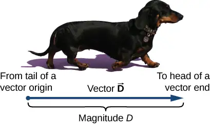
Let’s examine vector algebra using a graphical method to be aware of basic terms and to develop a qualitative understanding. In practice, however, when it comes to solving physics problems, we use analytical methods, which we’ll see in the next section. Analytical methods are more simple computationally and more accurate than graphical methods. From now on, to distinguish between a vector and a scalar quantity, we adopt the common convention that a letter in bold type with an arrow above it denotes a vector, and a letter without an arrow denotes a scalar. For example, a distance of 2.0 km, which is a scalar quantity, is denoted by d = 2.0 km, whereas a displacement of 2.0 km in some direction, which is a vector quantity, is denoted by \(\mathbf{\vec{d}}\).
Suppose you tell a friend on a camping trip that you have discovered a terrific fishing hole 6 km from your tent. It is unlikely your friend would be able to find the hole easily unless you also communicate the direction in which it can be found with respect to your campsite. You may say, for example, “Walk about 6 km northeast from my tent.” The key concept here is that you have to give not one but two pieces of information—namely, the distance or magnitude (6 km) and the direction (northeast).
Displacement is a general term used to describe a change in position, such as during a trip from the tent to the fishing hole. Displacement is an example of a vector quantity. If you walk from the tent (location A) to the hole (location B), as shown in Figure 2.3, the vector \(\mathbf{\vec{D}}\), representing your displacement, is drawn as the arrow that originates at point A and ends at point B. The arrowhead marks the end of the vector. The direction of the displacement vector \(\mathbf{\vec{D}}\) is the direction of the arrow. The length of the arrow represents the magnitude D of vector \(\mathbf{\vec{D}}\). Here, D = 6 km. Since the magnitude of a vector is its length, which is a positive number, the magnitude is also indicated by placing the absolute value notation around the symbol that denotes the vector; so, we can write equivalently that \(D\equiv|\mathbf{\vec{D}}|\). To solve a vector problem graphically, we need to draw the vector \(\mathbf{\vec{D}}\) to scale. For example, if we assume 1 unit of distance (1 km) is represented in the drawing by a line segment of length u = 2 cm, then the total displacement in this example is represented by a vector of length \(d=6u=6(2\:\text{cm})=12\:\text{cm}\), as shown in Figure 2.4. Notice that here, to avoid confusion, we used \(D=6\:\text{km}\) to denote the magnitude of the actual displacement and d = 12 cm to denote the length of its representation in the drawing.
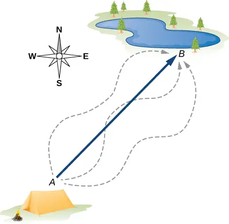
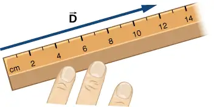
Suppose your friend walks from the campsite at A to the fishing pond at B and then walks back: from the fishing pond at B to the campsite at A. The magnitude of the displacement vector \({\mathbf{\vec{D}}}_{AB}\) from A to B is the same as the magnitude of the displacement vector \({\mathbf{\vec{D}}}_{BA}\) from B to A (it equals 6 km in both cases), so we can write \(D_{AB}=D_{BA}\). However, vector \({\mathbf{\vec{D}}}_{AB}\) is not equal to vector \({\mathbf{\vec{D}}}_{BA}\) because these two vectors have different directions: \({\mathbf{\vec{D}}}_{AB}\neq{\mathbf{\vec{D}}}_{BA}\). In Figure 2.3, vector \({\mathbf{\vec{D}}}_{BA}\) would be represented by a vector with an origin at point B and an end at point A, indicating vector \({\mathbf{\vec{D}}}_{BA}\) points to the southwest, which is exactly \(180{}^{\circ}\) opposite to the direction of vector \({\mathbf{\vec{D}}}_{AB}\). We say that vector \({\mathbf{\vec{D}}}_{BA}\) is antiparallel to vector \({\mathbf{\vec{D}}}_{AB}\) and write \({\mathbf{\vec{D}}}_{AB}=-{\mathbf{\vec{D}}}_{BA}\), where the minus sign indicates the antiparallel direction.
Two vectors that have identical directions are said to be parallel vectors—meaning, they are parallel to each other. Two parallel vectors \(\mathbf{\vec{A}}\) and \(\mathbf{\vec{B}}\) are equal, denoted by \(\mathbf{\vec{A}}=\mathbf{\vec{B}}\), if and only if they have equal magnitudes \(|\mathbf{\vec{A}}|=|\mathbf{\vec{B}}|\). Two vectors with directions perpendicular to each other are said to be orthogonal vectors. These relations between vectors are illustrated in Figure 2.5.
![Figure a: Two examples of vector A parallel to vector B. In one, A and B are on the same line, one after the other, but A is longer than B. In the other, A and B are parallel to each other with their tails aligned, but A is shorter than B. Figure b: An example of vector A antiparallel to vector B. Vector A points to the left and is longer than vector B, which points to the right. The angle between them is 180 degrees. Figure c: An example of vector A antiparallel to minus vector A: A points to the right and –A points to the left. Both are the same length. Figure d: Two examples of vector A equal to vector B: In one, A and B are on the same line, one after the other, and both are the same length. In the other, A and B are parallel to each other with their tails aligned, and both are the same length. Figure e: Two examples of vector A orthogonal to vector B: In one, A points down and B points to the right, meeting at a right angle, and both are the same length. In the other, points down and to the right and B points down and to the left, meeting A at a right angle. Both are the same length.](img/cnx-uphysics-02-01-vector02.webp)
Check Your Understanding
Two motorboats named Alice and Bob are moving on a lake. Given the information about their velocity vectors in each of the following situations, indicate whether their velocity vectors are equal or otherwise. (a) Alice moves north at 6 knots and Bob moves west at 6 knots. (b) Alice moves west at 6 knots and Bob moves west at 3 knots. (c) Alice moves northeast at 6 knots and Bob moves south at 3 knots. (d) Alice moves northeast at 6 knots and Bob moves southwest at 6 knots. (e) Alice moves northeast at 2 knots and Bob moves closer to the shore northeast at 2 knots.
Answer
a. not equal because they are orthogonal; b. not equal because they have different magnitudes; c. not equal because they have different magnitudes and directions; d. not equal because they are antiparallel; e. equal.
Algebra of Vectors in One Dimension¶
Vectors can be multiplied by scalars, added to other vectors, or subtracted from other vectors. We can illustrate these vector concepts using an example of the fishing trip seen in Figure 2.6.
![Three illustrations of the same tent and lake northeast of the tent. North is up on the page. The tent location is point A, and the lake location is point B. A location between A and B, about 2/3 of the way from A to B, is labeled as point C. In figure a, the vector from A to B is shown as a blue arrow, starting at A and ending at B, and labeled vector D sub A B. The vector from A to C is shown as a red arrow, starting at A and ending at C and labeled vector D sub A C. Three meandering paths are shown as dashed lines that start at A and end at B. Figure b adds the following to the illustration of figure a: Point D is added about half way between point A and B. The vector from A to D is shown as a purple arrow, starting at A and ending at D and labeled vector D sub A D. The vector from D to B is shown as an orange arrow, starting at D and ending at B and labeled vector D sub D B. Figure c adds a green arrow from point C to point D and is labeled vector D sub C D. Vector D sub C D points in the direction opposite to that of the other vectors, toward the tent rather than toward the lake.](img/cnx-uphysics-02-01-fishtrip.webp)
Suppose your friend departs from point A (the campsite) and walks in the direction to point B (the fishing pond), but, along the way, stops to rest at some point C located three-quarters of the distance between A and B, beginning from point A (Figure 2.6(a)). What is his displacement vector \({\mathbf{\vec{D}}}_{AC}\) when he reaches point C? We know that if he walks all the way to B, his displacement vector relative to A is \({\mathbf{\vec{D}}}_{AB}\), which has magnitude \(D_{AB}=6\:\text{km}\) and a direction of northeast. If he walks only a 0.75 fraction of the total distance, maintaining the northeasterly direction, at point C he must be \(0.75D_{AB}=4.5\:\text{km}\) away from the campsite at A. So, his displacement vector at the rest point C has magnitude \(D_{AC}=4.5\:\text{km}=0.75D_{AB}\) and is parallel to the displacement vector \({\mathbf{\vec{D}}}_{AB}\). All of this can be stated succinctly in the form of the following vector equation:
In a vector equation, both sides of the equation are vectors. The previous equation is an example of a vector multiplied by a positive scalar (number) \(\alpha=0.75\). The result, \({\mathbf{\vec{D}}}_{AC}\), of such a multiplication is a new vector with a direction parallel to the direction of the original vector \({\mathbf{\vec{D}}}_{AB}\).
In general, when a vector \(\mathbf{\vec{A}}\) is multiplied by a positive scalar \(\alpha\), the result is a new vector \(\mathbf{\vec{B}}\) that is parallel to \(\mathbf{\vec{A}}\):
equation callout
The magnitude \(|\mathbf{\vec{B}}|\) of this new vector is obtained by multiplying the magnitude \(|\mathbf{\vec{A}}|\) of the original vector, as expressed by the scalar equation:
equation callout
In a scalar equation, both sides of the equation are numbers. Equation 2.2 is a scalar equation because the magnitudes of vectors are scalar quantities (and positive numbers). If the scalar \(\alpha\) is negative in the vector equation Equation 2.1, then the magnitude \(|\mathbf{\vec{B}}|\) of the new vector is still given by Equation 2.2, but the direction of the new vector \(\mathbf{\vec{B}}\) is antiparallel to the direction of \(\mathbf{\vec{A}}\). These principles are illustrated in Figure 2.7(a) by two examples where the length of vector \(\mathbf{\vec{A}}\) is 1.5 units. When \(\alpha=2\), the new vector \(\mathbf{\vec{B}}=2\mathbf{\vec{A}}\) has length \(B=2A=3.0\:\text{units}\) (twice as long as the original vector) and is parallel to the original vector. When \(\alpha=-2\), the new vector \(\mathbf{\vec{C}}=-2\mathbf{\vec{A}}\) has length \(C=|-2|A=3.0\:\text{units}\) (twice as long as the original vector) and is antiparallel to the original vector.
![Figure a shows vector A pointing to the right. It has magnitude A=1.5. Vector B=2 time vector A points to the right and has magnitude B = 2 A = 3.0. Vector C = -2 times vector A and has magnitude B = 2.0. Figure b shows vector A points to the right and has magnitude A=1.5. Vector B is shown below vector A, with their tails aligned. Vector B points to the right and has magnitude 2.0. In another view, Vector A is shown with vector B starting at the head of A and extending further to the right. Below them is a vector, labeled as vector R = vector A plus vector B, pointing to the right whose tail is aligned with the tail of vector A and whose head is aligned with the head of vector B. The magnitude of vector R is equal to magnitude A plus magnitude B = 3.5. Figure c shows vector A points to the right and has magnitude A=1.5. Vector B is shown below vector A, with their tails aligned. Vector minus B points to the right and has magnitude 3.2. In another view, Vector A is shown with vector minus B pointing to the left and with its head meeting the head of vector A. Below them is a vector, labeled as vector D = vector A minus vector B, shorter than B and pointing to the left whose head is aligned with the head of vector B. The magnitude of vector D is equal to magnitude of quantity A minus B = 1.7. Figure d shows vector A pointing to the right with vector D = A minus B pointing to the left and with its head meeting the head of vector A. Below them is a vector, labeled as vector B pointing to the right.](img/cnx-uphysics-02-01-vector03.webp)
Now suppose your fishing buddy departs from point A (the campsite), walking in the direction to point B (the fishing hole), but he realizes he lost his tackle box when he stopped to rest at point C (located three-quarters of the distance between A and B, beginning from point A). So, he turns back and retraces his steps in the direction toward the campsite and finds the box lying on the path at some point D only 1.2 km away from point C (see Figure 2.6(b)). What is his displacement vector \({\mathbf{\vec{D}}}_{AD}\) when he finds the box at point D? What is his displacement vector \({\mathbf{\vec{D}}}_{DB}\) from point D to the hole? We have already established that at rest point C his displacement vector is \({\mathbf{\vec{D}}}_{AC}=0.75{\mathbf{\vec{D}}}_{AB}\). Starting at point C, he walks southwest (toward the campsite), which means his new displacement vector \({\mathbf{\vec{D}}}_{CD}\) from point C to point D is antiparallel to \({\mathbf{\vec{D}}}_{AB}\). Its magnitude \(|{\mathbf{\vec{D}}}_{CD}|\) is \(D_{CD}=1.2\:\text{km}=0.2D_{AB}\), so his second displacement vector is \({\mathbf{\vec{D}}}_{CD}=-0.2{\mathbf{\vec{D}}}_{AB}\). His total displacement \({\mathbf{\vec{D}}}_{AD}\) relative to the campsite is the vector sum of the two displacement vectors: vector \({\mathbf{\vec{D}}}_{AC}\) (from the campsite to the rest point) and vector \({\mathbf{\vec{D}}}_{CD}\) (from the rest point to the point where he finds his box):
equation callout
The vector sum of two (or more) vectors is called the resultant vector or, for short, the resultant. When the vectors on the right-hand-side of Equation 2.3 are known, we can find the resultant \({\mathbf{\vec{D}}}_{AD}\) as follows:
When your friend finally reaches the pond at B, his displacement vector \({\mathbf{\vec{D}}}_{AB}\) from point A is the vector sum of his displacement vector \({\mathbf{\vec{D}}}_{AD}\) from point A to point D and his displacement vector \({\mathbf{\vec{D}}}_{DB}\) from point D to the fishing hole: \({\mathbf{\vec{D}}}_{AB}={\mathbf{\vec{D}}}_{AD}+{\mathbf{\vec{D}}}_{DB}\) (see Figure 2.6(c)). This means his displacement vector \({\mathbf{\vec{D}}}_{DB}\) is the difference of two vectors:
Notice that a difference of two vectors is nothing more than a vector sum of two vectors because the second term in Equation 2.5 is vector \(-{\mathbf{\vec{D}}}_{AD}\) (which is antiparallel to \({\mathbf{\vec{D}}}_{AD})\). When we substitute Equation 2.4 into Equation 2.5, we obtain the second displacement vector:
This result means your friend walked \(D_{DB}=0.45D_{AB}=0.45(6.0\:\text{km})=2.7\:\text{km}\) from the point where he finds his tackle box to the fishing hole.
When vectors \(\mathbf{\vec{A}}\) and \(\mathbf{\vec{B}}\) lie along a line (that is, in one dimension), such as in the camping example, their resultant \(\mathbf{\vec{R}}=\mathbf{\vec{A}}+\mathbf{\vec{B}}\) and their difference \(\mathbf{\vec{D}}=\mathbf{\vec{A}}-\mathbf{\vec{B}}\) both lie along the same direction. We can illustrate the addition or subtraction of vectors by drawing the corresponding vectors to scale in one dimension, as shown in Figure 2.7.
To illustrate the resultant when \(\mathbf{\vec{A}}\) and \(\mathbf{\vec{B}}\) are two parallel vectors, we draw them along one line by placing the origin of one vector at the end of the other vector in head-to-tail fashion (see Figure 2.7(b)). The magnitude of this resultant is the sum of their magnitudes: R = A + B. The direction of the resultant is parallel to both vectors. When vector \(\mathbf{\vec{A}}\) is antiparallel to vector \(\mathbf{\vec{B}}\), we can draw them along one line in head-to-head fashion (Figure 2.7(c)), tail-to-tail fashion, or head-to-tail fashion. The magnitude of the vector difference, then, is the absolute value \(D=|A-B|\) of the difference of their magnitudes. The direction of the difference vector \(\mathbf{\vec{D}}\) is parallel to the direction of the longer vector.
In general, in one dimension—as well as in higher dimensions, such as in a plane or in space—we can add any number of vectors and we can do so in any order because the addition of vectors is commutative,
equation callout
and associative,
equation callout
Moreover, multiplication by a scalar is distributive:
equation callout
We used the distributive property in Equation 2.4 and Equation 2.6.
When adding many vectors in one dimension, it is convenient to use the concept of a unit vector. A unit vector, which is denoted by a letter symbol with a hat, such as \(\mathbf{\hat{u}}\), has a magnitude of one and does not have any physical unit so that \(|\mathbf{\hat{u}}|\equiv u=1\). The only role of a unit vector is to specify direction. For example, instead of saying vector \({\mathbf{\vec{D}}}_{AB}\) has a magnitude of 6.0 km and a direction of northeast, we can introduce a unit vector \(\mathbf{\hat{u}}\) that points to the northeast and say succinctly that \({\mathbf{\vec{D}}}_{AB}=(6.0\:\text{km})\mathbf{\hat{u}}\). Then the southwesterly direction is simply given by the unit vector \(-\mathbf{\hat{u}}\). In this way, the displacement of 6.0 km in the southwesterly direction is expressed by the vector
Example 2.1 A Ladybug Walker
A long measuring stick rests against a wall in a physics laboratory with its 200-cm end at the floor. A ladybug lands on the 100-cm mark and crawls randomly along the stick. It first walks 15 cm toward the floor, then it walks 56 cm toward the wall, then it walks 3 cm toward the floor again. Then, after a brief stop, it continues for 25 cm toward the floor and then, again, it crawls up 19 cm toward the wall before coming to a complete rest (Figure 2.8). Find the vector of its total displacement and its final resting position on the stick.
Strategy
If we choose the direction along the stick toward the floor as the direction of unit vector \(\mathbf{\hat{u}}\), then the direction toward the floor is \(+\mathbf{\hat{u}}\) and the direction toward the wall is \(-\mathbf{\hat{u}}\). The ladybug makes a total of five displacements:
The total displacement \(\mathbf{\vec{D}}\) is the resultant of all its displacement vectors.
![Five illustrations of a ladybug on a ruler leaning against a wall. The +u hat direction is toward the floor parallel to the ruler, and the – u hat direction is up along the ruler. In the first illustration, the ladybug is located near the middle of the ruler and vector D sub 1 points down the ruler. In the second illustration, the ladybug is located lower, where the head of vector D sub 1 is in the first illustration, and vector D sub 2 points up the ruler. In the third illustration, the ladybug is located higher, where the head of vector D sub 2 is in the second illustration, and vector D sub 3 points down the ruler. In the fourth illustration, the ladybug is located lower, where the head of vector D sub 3 is in the third illustration, and vector D sub 4 points down the ruler. In the fifth illustration, the ladybug is located lower, where the head of vector D sub 4 is in the fourth illustration, and vector D sub 5 points up the ruler.](img/cnx-uphysics-02-01-ladybug.webp)
Solution
The resultant of all the displacement vectors is
In this calculation, we use the distributive law given by Equation 2.9. The result reads that the total displacement vector points away from the 100-cm mark (initial landing site) toward the end of the meter stick that touches the wall. The end that touches the wall is marked 0 cm, so the final position of the ladybug is at the (100 – 32)cm = 68-cm mark.
Check Your Understanding
A cave diver enters a long underwater tunnel. When her displacement with respect to the entry point is 20 m, she accidentally drops her camera, but she doesn’t notice it missing until she is some 6 m farther into the tunnel. She swims back 10 m but cannot find the camera, so she decides to end the dive. How far from the entry point is she? Taking the positive direction out of the tunnel, what is her displacement vector relative to the entry point?
Answer
16 m; \(\mathbf{\vec{D}}=-16\:\text{m}\mathbf{\hat{u}}\)
Algebra of Vectors in Two Dimensions¶
When vectors lie in a plane—that is, when they are in two dimensions—they can be multiplied by scalars, added to other vectors, or subtracted from other vectors in accordance with the general laws expressed by Equation 2.1, Equation 2.2, Equation 2.7, and Equation 2.8. However, the addition rule for two vectors in a plane becomes more complicated than the rule for vector addition in one dimension. We have to use the laws of geometry to construct resultant vectors, followed by trigonometry to find vector magnitudes and directions. This geometric approach is commonly used in navigation (Figure 2.9). In this section, we need to have at hand two rulers, a triangle, a protractor, a pencil, and an eraser for drawing vectors to scale by geometric constructions.
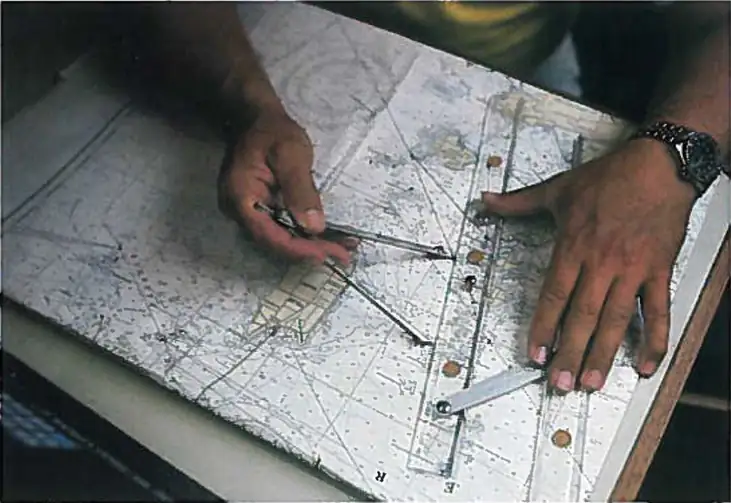
For a geometric construction of the sum of two vectors in a plane, we follow the parallelogram rule. Suppose two vectors \(\mathbf{\vec{A}}\) and \(\mathbf{\vec{B}}\) are at the arbitrary positions shown in Figure 2.10. Translate either one of them in parallel to the beginning of the other vector, so that after the translation, both vectors have their origins at the same point. Now, at the end of vector \(\mathbf{\vec{A}}\) we draw a line parallel to vector \(\mathbf{\vec{B}}\) and at the end of vector \(\mathbf{\vec{B}}\) we draw a line parallel to vector \(\mathbf{\vec{A}}\) (the dashed lines in Figure 2.10). In this way, we obtain a parallelogram. From the origin of the two vectors we draw a diagonal that is the resultant \(\mathbf{\vec{R}}\) of the two vectors: \(\mathbf{\vec{R}}=\mathbf{\vec{A}}+\mathbf{\vec{B}}\) (Figure 2.10(a)). The other diagonal of this parallelogram is the vector difference of the two vectors \(\mathbf{\vec{D}}=\mathbf{\vec{A}}-\mathbf{\vec{B}}\), as shown in Figure 2.10(b). Notice that the end of the difference vector is placed at the end of vector \(\mathbf{\vec{A}}\).
![The parallelogram method for adding vectors is illustrated. In figure a, vectors A and B are shown. Vector A points to the right and down and vector B points right and up. Vectors A and B are then shown as solid arrows with their tails together, and their directions as before. A dashed line parallel to vector A but shifted so it starts at the head of B is shown. A second dashed line, parallel to B and starting at the head of A is also shown. The vectors A and B and the two dashed lines form a parallelogram. A third vector, labeled vector R = vector A plus vector B, is shown. The tail of vector R is at the tails of vectors A and B, and the head of vector R is where the dashed lines meet each other, diagonally across the parallelogram. We note that the magnitude of R is not equal to the magnitude of A plus the magnitude of B. In figure b, vectors A and minus B are shown. Vector minus B is vector B from part a, rotated 180 degrees. Vector A points to the right and down and vector minus B points left and down. Vectors A and B are then shown as solid arrows with their tails together, and their directions as before. A dashed line parallel to vector A but shifted so it starts at the head of B is shown. A second dashed line, parallel to B and starting at the head of A is also shown. The vectors A and B and the two dashed lines form a parallelogram. A third vector, labeled vector D is shown. The tail of vector D is at the head of vector B, and the head of vector D is at the head of vector A, diagonally across the parallelogram. We note that vector D is equal to vector A minus vector B, but the magnitude of D is not equal to the magnitude of A minus the B.](img/cnx-uphysics-02-01-vector04.webp)
It follows from the parallelogram rule that neither the magnitude of the resultant vector nor the magnitude of the difference vector can be expressed as a simple sum or difference of magnitudes A and B, because the length of a diagonal cannot be expressed as a simple sum of side lengths. When using a geometric construction to find magnitudes \(|\mathbf{\vec{R}}|\) and \(|\mathbf{\vec{D}}|\), we have to use trigonometry laws for triangles, which may lead to complicated algebra. There are two ways to circumvent this algebraic complexity. One way is to use the method of components, which we examine in the next section. The other way is to draw the vectors to scale, as is done in navigation, and read approximate vector lengths and angles (directions) from the graphs. In this section we examine the second approach.
If we need to add three or more vectors, we repeat the parallelogram rule for the pairs of vectors until we find the resultant of all of the resultants. For three vectors, for example, we first find the resultant of vector 1 and vector 2, and then we find the resultant of this resultant and vector 3. The order in which we select the pairs of vectors does not matter because the operation of vector addition is commutative and associative (see Equation 2.7 and Equation 2.8). Before we state a general rule that follows from repetitive applications of the parallelogram rule, let’s look at the following example.
Suppose you plan a vacation trip in Florida. Departing from Tallahassee, the state capital, you plan to visit your uncle Joe in Jacksonville, see your cousin Vinny in Daytona Beach, stop for a little fun in Orlando, see a circus performance in Tampa, and visit the University of Florida in Gainesville. Your route may be represented by five displacement vectors \(\mathbf{\vec{A}},\) \(\mathbf{\vec{B}}\), \(\mathbf{\vec{C}}\), \(\mathbf{\vec{D}}\), and \(\mathbf{\vec{E}}\), which are indicated by the red vectors in Figure 2.11. What is your total displacement when you reach Gainesville? The total displacement is the vector sum of all five displacement vectors, which may be found by using the parallelogram rule four times. Alternatively, recall that the displacement vector has its beginning at the initial position (Tallahassee) and its end at the final position (Gainesville), so the total displacement vector can be drawn directly as an arrow connecting Tallahassee with Gainesville (see the green vector in Figure 2.11). When we use the parallelogram rule four times, the resultant \(\mathbf{\vec{R}}\) we obtain is exactly this green vector connecting Tallahassee with Gainesville: \(\mathbf{\vec{R}}=\mathbf{\vec{A}}+\mathbf{\vec{B}}+\mathbf{\vec{C}}+\mathbf{\vec{D}}+\mathbf{\vec{E}}\).
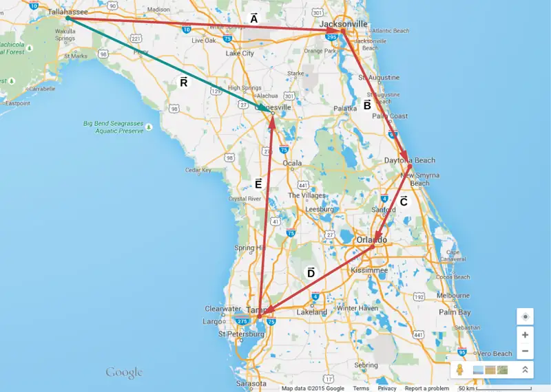
Drawing the resultant vector of many vectors can be generalized by using the following tail-to-head geometric construction. Suppose we want to draw the resultant vector \(\mathbf{\vec{R}}\) of four vectors \(\mathbf{\vec{A}}\), \(\mathbf{\vec{B}}\), \(\mathbf{\vec{C}}\), and \(\mathbf{\vec{D}}\) (Figure 2.12(a)). We select any one of the vectors as the first vector and make a parallel translation of a second vector to a position where the origin (“tail”) of the second vector coincides with the end (“head”) of the first vector. Then, we select a third vector and make a parallel translation of the third vector to a position where the origin of the third vector coincides with the end of the second vector. We repeat this procedure until all the vectors are in a head-to-tail arrangement like the one shown in Figure 2.12. We draw the resultant vector \(\mathbf{\vec{R}}\) by connecting the origin (“tail”) of the first vector with the end (“head”) of the last vector. The end of the resultant vector is at the end of the last vector. Because the addition of vectors is associative and commutative, we obtain the same resultant vector regardless of which vector we choose to be first, second, third, or fourth in this construction.
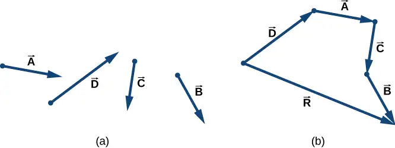
Example 2.2 Geometric Construction of the Resultant
The three displacement vectors \(\mathbf{\vec{A}}\), \(\mathbf{\vec{B}}\), and \(\mathbf{\vec{C}}\) in Figure 2.13 are specified by their magnitudes A = 10.0, B = 7.0, and C = 8.0, respectively, and by their respective direction angles with the horizontal direction \(\alpha=35{}^{\circ}\), \(\beta=-110{}^{\circ}\), and \(\gamma=30{}^{\circ}\). The physical units of the magnitudes are centimeters. Choose a convenient scale and use a ruler and a protractor to find the following vector sums: (a) \(\mathbf{\vec{R}}=\mathbf{\vec{A}}+\mathbf{\vec{B}}\), (b) \(\mathbf{\vec{D}}=\mathbf{\vec{A}}-\mathbf{\vec{B}}\text{, and}\) (c) \(\mathbf{\vec{S}}=\mathbf{\vec{A}}-3\mathbf{\vec{B}}+\mathbf{\vec{C}}\).
![Vector A has magnitude 10.0 and is at an angle alpha = 35 degrees counterclockwise from the horizontal. It points up and right. Vector B has magnitude 7.0 and is at an angle beta = -110 degrees clockwise from the horizontal. It points down and left. Vector C has magnitude 8.0 and is at an angle gamma = 30 degrees counterclockwise from the horizontal. It points up and right. Vector F has magnitude 20.0 and is at an angle phi = 110 degrees counterclockwise from the horizontal. It points up and left.](img/cnx-uphysics-02-01-vector07.webp)
Strategy
In geometric construction, to find a vector means to find its magnitude and its direction angle with the horizontal direction. The strategy is to draw to scale the vectors that appear on the right-hand side of the equation and construct the resultant vector. Then, use a ruler and a protractor to read the magnitude of the resultant and the direction angle. For parts (a) and (b) we use the parallelogram rule. For (c) we use the tail-to-head method.
Solution
For parts (a) and (b), we attach the origin of vector \(\mathbf{\vec{B}}\) to the origin of vector \(\mathbf{\vec{A}}\), as shown in Figure 2.14, and construct a parallelogram. The shorter diagonal of this parallelogram is the sum \(\mathbf{\vec{A}}+\mathbf{\vec{B}}\). The longer of the diagonals is the difference \(\mathbf{\vec{A}}-\mathbf{\vec{B}}\). We use a ruler to measure the lengths of the diagonals, and a protractor to measure the angles with the horizontal. For the resultant \(\mathbf{\vec{R}}\), we obtain R = 5.8 cm and \(\theta_{R}\approx 0{}^{\circ}\). For the difference \(\mathbf{\vec{D}}\), we obtain D = 16.2 cm and \(\theta_{D}=49.3{}^{\circ}\), which are shown in Figure 2.14.
![Three diagrams of vectors A and B. Vectors A and B are shown placed tail to tail. Vector A points up and right and has magnitude 10.0. Vector B points down and left and has magnitude 7.0. The angle between vectors A and B is 145 degrees. In the second diagram, Vectors A and B are shown again along with the dashed lines completing the parallelogram. Vector R equaling the sum of vectors A and B is shown as the vector from the tails of A and B to the opposite vertex of the parallelogram. The magnitude of R is 5.8. In the third diagram, Vectors A and B are shown again along with the dashed lines completing the parallelogram. Vector D equaling the difference of vectors A and B is shown as the vector from the head of B to the head of A. The magnitude of D is 16.2, and the angle between D and the horizontal is 49.3 degrees. Vector R in the second diagram is much shorter than vector D in the third diagram.](img/cnx-uphysics-02-01-vector08.webp)
For (c), we can start with vector \(-3\mathbf{\vec{B}}\) and draw the remaining vectors tail-to-head as shown in Figure 2.15. In vector addition, the order in which we draw the vectors is unimportant, but drawing the vectors to scale is very important. Next, we draw vector \(\mathbf{\vec{S}}\) from the origin of the first vector to the end of the last vector and place the arrowhead at the end of \(\mathbf{\vec{S}}\). We use a ruler to measure the length of \(\mathbf{\vec{S}}\), and find that its magnitude is
S = 36.9 cm. We use a protractor and find that its direction angle is \(\theta_{S}=52.9{}^{\circ}\). This solution is shown in Figure 2.15.
![Three vectors are shown in blue and placed head to tail: Vector minus 3 B points up and right and has magnitude 3 B = 21.0. Vector A starts at the head of B, points up and right, and has a magnitude of A=10.0. The angle between vector A and vector minus 3 B is 145 degrees. Vector C starts at the head of A and has magnitude C=8.0. Vector S is green and goes from the tail of minus 3 B to the head of C. Vector S equals vector A minus 3 vector B plus vector C, has a magnitude of S=36.9 and makes an angle of 52.9 degrees counterclockwise with the horizontal.](img/cnx-uphysics-02-01-vector09.webp)
Check Your Understanding
Using the three displacement vectors \(\mathbf{\vec{A}}\), \(\mathbf{\vec{B}}\), and \(\mathbf{\vec{F}}\) in Figure 2.13, choose a convenient scale, and use a ruler and a protractor to find vector \(\mathbf{\vec{G}}\) given by the vector equation \(\mathbf{\vec{G}}=\mathbf{\vec{A}}+2\mathbf{\vec{B}}-\mathbf{\vec{F}}\).
Answer
G = 28.2 cm, \(\theta_{G}=291{}^{\circ}\)
Media
Observe the addition of vectors in a plane by visiting this vector calculator, and by engaging the Phet simulation below.
2.2 Coordinate Systems and Components of a Vector¶
Learning Objectives
By the end of this section, you will be able to:
- Describe vectors in two and three dimensions in terms of their components, using unit vectors along the axes.
- Distinguish between the vector components of a vector and the scalar components of a vector.
- Explain how the magnitude of a vector is defined in terms of the components of a vector.
- Identify the direction angle of a vector in a plane.
- Explain the connection between polar coordinates and Cartesian coordinates in a plane.
Vectors are usually described in terms of their components in a coordinate system. Even in everyday life we naturally invoke the concept of vector components in a rectangular coordinate system. For example, if you ask someone for directions to a particular location, you will more likely be told to go 40 km east and 30 km north than 50 km in the direction \(37{}^{\circ}\) north of east.
In a rectangular (Cartesian) xy-coordinate system in a plane, a point in a plane is described by a pair of coordinates (x, y). In a similar fashion, a vector \(\mathbf{\vec{A}}\) in a plane is described by a pair of its vector coordinates. The x-coordinate of vector \(\mathbf{\vec{A}}\) is called its x-component and the y-coordinate of vector \(\mathbf{\vec{A}}\) is called its y-component. The vector x-component is a vector denoted by \({\mathbf{\vec{A}}}_{x}\). The vector y-component is a vector denoted by \({\mathbf{\vec{A}}}_{y}\). In the Cartesian system, the x and y vector components of a vector are the orthogonal projections, as illustrated in Figure 2.16, of this vector onto the x- and y-axes, respectively. In this way, following the parallelogram rule for vector addition, each vector on a Cartesian plane can be expressed as the vector sum of its vector components:
As illustrated in Figure 2.16, vector \(\mathbf{\vec{A}}\) is the diagonal of the rectangle where the x-component \({\mathbf{\vec{A}}}_{x}\) is the side parallel to the x-axis and the y-component \({\mathbf{\vec{A}}}_{y}\) is the side parallel to the y-axis. Vector component \({\mathbf{\vec{A}}}_{x}\) is orthogonal to vector component \({\mathbf{\vec{A}}}_{y}\).
![Vector A is shown in the x y coordinate system and extends from point b at A’s tail to point e and its head. Vector A points up and to the right. Unit vectors I hat and j hat are small vectors pointing in the x and y directions, respectively, and are at right angles to each other. The x component of vector A is a vector pointing horizontally from the point b to a point directly below point e at the tip of vector A. On the x axis, we see that the vector A sub x extends from x sub b to x sub e and is equal to magnitude A sub x times I hat. The magnitude A sub x equals x sub e minus x sub b. The y component of vector A is a vector pointing vertically from point b to a point directly to the left of point e at the tip of vector A. On the y axis, we see that the vector A sub y extends from y sub b to y sub e and is equal to magnitude A sub y times j hat. The magnitude A sub y equals y sub e minus y sub b.](img/cnx-uphysics-02-02-comp01.webp)
It is customary to denote the positive direction on the x-axis by the unit vector \(\mathbf{\hat{i}}\) and the positive direction on the y-axis by the unit vector \(\mathbf{\hat{j}}\). Unit vectors of the axes, \(\mathbf{\hat{i}}\) and \(\mathbf{\hat{j}}\), define two orthogonal directions in the plane. As shown in Figure 2.16, the x- and y- components of a vector can now be written in terms of the unit vectors of the axes:
The vectors \({\mathbf{\vec{A}}}_{x}\) and \({\mathbf{\vec{A}}}_{y}\) defined by Equation 2.11 are the vector components of vector \(\mathbf{\vec{A}}\). The numbers \(A_{x}\) and \(A_{y}\) that define the vector components in Equation 2.11 are the scalar components of vector \(\mathbf{\vec{A}}\). Combining Equation 2.10 with Equation 2.11, we obtain the component form of a vector:
equation callout
If we know the coordinates \(\text{b}(x_{b},y_{b})\) of the origin point of a vector (where b stands for “beginning”) and the coordinates \(\text{e}(x_{e},y_{e})\) of the end point of a vector (where e stands for “end”), we can obtain the scalar components of a vector simply by subtracting the origin point coordinates from the end point coordinates:
equation callout
Example 2.3 Displacement of a Mouse Pointer
A mouse pointer on the display monitor of a computer at its initial position is at point (6.0 cm, 1.6 cm) with respect to the lower left-side corner. If you move the pointer to an icon located at point (2.0 cm, 4.5 cm), what is the displacement vector of the pointer?
Strategy
The origin of the xy-coordinate system is the lower left-side corner of the computer monitor. Therefore, the unit vector \(\mathbf{\hat{i}}\) on the x-axis points horizontally to the right and the unit vector \(\mathbf{\hat{j}}\) on the y-axis points vertically upward. The origin of the displacement vector is located at point b(6.0, 1.6) and the end of the displacement vector is located at point e(2.0, 4.5). Substitute the coordinates of these points into Equation 2.13 to find the scalar components \(D_{x}\) and \(D_{y}\) of the displacement vector \(\mathbf{\vec{D}}\). Finally, substitute the coordinates into Equation 2.12 to write the displacement vector in the vector component form.
Solution
We identify \(x_{b}=6.0\), \(x_{e}=2.0\), \(y_{b}=1.6\), and \(y_{e}=4.5\), where the physical unit is 1 cm. The scalar x- and y-components of the displacement vector are
The vector component form of the displacement vector is
This solution is shown in Figure 2.17.
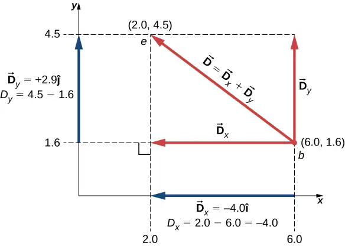
Significance
Notice that the physical unit—here, 1 cm—can be placed either with each component immediately before the unit vector or globally for both components, as in Equation 2.14. Often, the latter way is more convenient because it is simpler.
The vector x-component \({\mathbf{\vec{D}}}_{x}=-4.0\mathbf{\hat{i}}=4.0(-\mathbf{\hat{i}})\) of the displacement vector has the magnitude \(|{\mathbf{\vec{D}}}_{x}|=|-4.0||\mathbf{\hat{i}}|=4.0\) because the magnitude of the unit vector is \(|\mathbf{\hat{i}}|=1\). Notice, too, that the direction of the x-component is \(-\mathbf{\hat{i}}\), which is antiparallel to the direction of the +x-axis; hence, the x-component vector \({\mathbf{\vec{D}}}_{x}\) points to the left, as shown in Figure 2.17. The scalar x-component of vector \(\mathbf{\vec{D}}\) is \(D_{x}=-4.0\).
Similarly, the vector y-component \({\mathbf{\vec{D}}}_{y}=+2.9\mathbf{\hat{j}}\) of the displacement vector has magnitude \(|{\mathbf{\vec{D}}}_{y}|=|2.9||\mathbf{\hat{j}}|=\:2.9\) because the magnitude of the unit vector is \(|\mathbf{\hat{j}}|=1\). The direction of the y-component is \(+\mathbf{\hat{j}}\), which is parallel to the direction of the +y-axis. Therefore, the y-component vector \({\mathbf{\vec{D}}}_{y}\) points up, as seen in Figure 2.17. The scalar y-component of vector \(\mathbf{\vec{D}}\) is \(D_{y}=+2.9\). The displacement vector \(\mathbf{\vec{D}}\) is the resultant of its two vector components.
The vector component form of the displacement vector Equation 2.14 tells us that the mouse pointer has been moved on the monitor 4.0 cm to the left and 2.9 cm upward from its initial position.
Check Your Understanding
A blue fly lands on a sheet of graph paper at a point located 10.0 cm to the right of its left edge and 8.0 cm above its bottom edge and walks slowly to a point located 5.0 cm from the left edge and 5.0 cm from the bottom edge. Choose the rectangular coordinate system with the origin at the lower left-side corner of the paper and find the displacement vector of the fly. Illustrate your solution by graphing.
Answer
\(\mathbf{\vec{D}}=(-5.0\mathbf{\hat{i}}-3.0\mathbf{\hat{j}})\text{cm}\); the fly moved 5.0 cm to the left and 3.0 cm down from its landing site.
When we know the scalar components \(A_{x}\) and \(A_{y}\) of a vector \(\mathbf{\vec{A}}\), we can find its magnitude A and its direction angle \(\theta_{A}\). The direction angle—or direction, for short—is the angle the vector forms with the positive direction on the x-axis. The angle \(\theta_{A}\) is measured in the counterclockwise direction from the +x-axis to the vector (Figure 2.18). Because the lengths A, \(A_{x}\), and \(A_{y}\) form a right triangle, they are related by the Pythagorean theorem:
equation callout
This equation works even if the scalar components of a vector are negative. The direction angle \(\theta_{A}\) of a vector is defined via the tangent function of angle \(\theta_{A}\) in the triangle shown in Figure 2.18:
equation callout
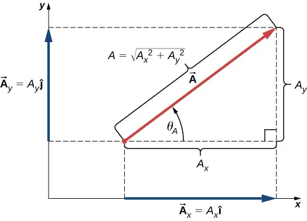
When the vector lies either in the first quadrant or in the fourth quadrant, where component \(A_{x}\) is positive (Figure 2.19), the angle \(\theta\) in Equation 2.16 is identical to the direction angle \(\theta_{A}\). For vectors in the fourth quadrant, angle \(\theta\) is negative, which means that for these vectors, direction angle \(\theta_{A}\) is measured clockwise from the positive x-axis. Similarly, for vectors in the second quadrant, angle \(\theta\) is negative. When the vector lies in either the second or third quadrant, where component \(A_{x}\) is negative, the direction angle is \(\theta_{A}=\theta+180{}^{\circ}\) (Figure 2.19).
![Figure I shows vector A in the first quadrant (pointing up and right.) It has positive x and y components A sub x and A sub y, and the angle theta sub A measured counterclockwise from the positive x axis is smaller than 90 degrees. Figure II shows vector A in the first second (pointing up and left.) It has negative x and positive y components A sub x and A sub y. The angle theta sub A measured counterclockwise from the positive x axis is larger than 90 degrees but less than 180 degrees. The angle theta, measured clockwise from the negative x axis, is smaller than 90 degrees. Figure III shows vector A in the third quadrant (pointing down and left.) It has negative x and y components A sub x and A sub y, and the angle theta sub A measured counterclockwise from the positive x axis is larger than 180 degrees and smaller than 270 degrees. The angle theta, measured counterclockwise from the negative x axis, is smaller than 90 degrees. Figure IV shows vector A in the fourth quadrant (pointing down and right.) It has positive x and negative y components A sub x and A sub y, and the angle theta sub A measured clockwise from the positive x axis is smaller than 90 degrees.](img/cnx-uphysics-02-02-comp04.webp)
Example 2.4 Magnitude and Direction of the Displacement Vector
You move a mouse pointer on the display monitor from its initial position at point (6.0 cm, 1.6 cm) to an icon located at point (2.0 cm, 4.5 cm). What are the magnitude and direction of the displacement vector of the pointer?
Strategy
In Example 2.3, we found the displacement vector \(\mathbf{\vec{D}}\) of the mouse pointer (see Equation 2.14). We identify its scalar components \(D_{x}=-4.0\:\text{cm}\) and \(D_{y}=+2.9\:\text{cm}\) and substitute into Equation 2.15 and Equation 2.16 to find the magnitude D and direction \(\theta_{D}\), respectively.
Solution
The magnitude of vector \(\mathbf{\vec{D}}\) is
The direction angle is
Vector \(\mathbf{\vec{D}}\) lies in the second quadrant, so its direction angle is
Check Your Understanding
If the displacement vector of a blue fly walking on a sheet of graph paper is \(\mathbf{\vec{D}}=(-5.00\mathbf{\hat{i}}-3.00\mathbf{\hat{j}})\text{cm}\), find its magnitude and direction.
Answer
5.83 cm, \(211{}^{\circ}\)
In many applications, the magnitudes and directions of vector quantities are known and we need to find the resultant of many vectors. For example, imagine 400 cars moving on the Golden Gate Bridge in San Francisco in a strong wind. Each car gives the bridge a different push in various directions and we would like to know how big the resultant push can possibly be. We have already gained some experience with the geometric construction of vector sums, so we know the task of finding the resultant by drawing the vectors and measuring their lengths and angles may become intractable pretty quickly, leading to huge errors. Worries like this do not appear when we use analytical methods. The very first step in an analytical approach is to find vector components when the direction and magnitude of a vector are known.
Let us return to the right triangle in Figure 2.18. The quotient of the adjacent side \(A_{x}\) to the hypotenuse A is the cosine function of direction angle \(\theta_{A}\), \(A_{x}\text{/}A=\cos\:\theta_{A}\), and the quotient of the opposite side \(A_{y}\) to the hypotenuse A is the sine function of \(\theta_{A}\), \(A_{y}\text{/}A=\sin\:\theta_{A}\). When magnitude A and direction \(\theta_{A}\) are known, we can solve these relations for the scalar components:
equation callout
When calculating vector components with Equation 2.17, care must be taken with the angle. The direction angle \(\theta_{A}\) of a vector is the angle measured counterclockwise from the positive direction on the x-axis to the vector. The clockwise measurement gives a negative angle.
Example 2.5 Components of Displacement Vectors
A rescue party for a missing child follows a search dog named Trooper. Trooper wanders a lot and makes many trial sniffs along many different paths. Trooper eventually finds the child and the story has a happy ending, but his displacements on various legs seem to be truly convoluted. On one of the legs he walks 200.0 m southeast, then he runs north some 300.0 m. On the third leg, he examines the scents carefully for 50.0 m in the direction \(30{}^{\circ}\) west of north. On the fourth leg, Trooper goes directly south for 80.0 m, picks up a fresh scent and turns \(23{}^{\circ}\) west of south for 150.0 m. Find the scalar components of Trooper’s displacement vectors and his displacement vectors in vector component form for each leg.
Strategy
Let’s adopt a rectangular coordinate system with the positive x-axis in the direction of geographic east, with the positive y-direction pointed to geographic north. Explicitly, the unit vector \(\mathbf{\hat{i}}\) of the x-axis points east and the unit vector \(\mathbf{\hat{j}}\) of the y-axis points north. Trooper makes five legs, so there are five displacement vectors. We start by identifying their magnitudes and direction angles, then we use Equation 2.17 to find the scalar components of the displacements and Equation 2.12 for the displacement vectors.
Solution
On the first leg, the displacement magnitude is \(L_{1}=200.0\:\text{m}\) and the direction is southeast. For direction angle \(\theta_{1}\) we can take either \(45{}^{\circ}\) measured clockwise from the east direction or \(45{}^{\circ}+270{}^{\circ}\) measured counterclockwise from the east direction. With the first choice, \(\theta_{1}=-45{}^{\circ}\). With the second choice, \(\theta_{1}=+315{}^{\circ}\). We can use either one of these two angles. The components are
The displacement vector of the first leg is
On the second leg of Trooper’s wanderings, the magnitude of the displacement is \(L_{2}=300.0\:\text{m}\) and the direction is north. The direction angle is \(\theta_{2}=+90{}^{\circ}\). We obtain the following results:
On the third leg, the displacement magnitude is \(L_{3}=50.0\:\text{m}\) and the direction is \(30{}^{\circ}\) west of north. The direction angle measured counterclockwise from the eastern direction is \(\theta_{3}=30{}^{\circ}+90{}^{\circ}=+120{}^{\circ}\). This gives the following answers:
On the fourth leg of the excursion, the displacement magnitude is \(L_{4}=80.0\:\text{m}\) and the direction is south. The direction angle can be taken as either \(\theta_{4}=-90{}^{\circ}\) or \(\theta_{4}=+270{}^{\circ}\). We obtain
On the last leg, the magnitude is \(L_{5}=150.0\:\text{m}\) and the angle is \(\theta_{5}=-23{}^{\circ}+270{}^{\circ}=+247{}^{\circ}\) \((23{}^{\circ}\) west of south), which gives
Check Your Understanding
If Trooper runs 20 m west before taking a rest, what is his displacement vector?
Answer
\(\mathbf{\vec{D}}=(-20\:\text{m})\mathbf{\hat{i}}\)
Polar Coordinates¶
To describe locations of points or vectors in a plane, we need two orthogonal directions. In the Cartesian coordinate system these directions are given by unit vectors \(\mathbf{\hat{i}}\) and \(\mathbf{\hat{j}}\) along the x-axis and the y-axis, respectively. The Cartesian coordinate system is very convenient to use in describing displacements and velocities of objects and the forces acting on them. However, it becomes cumbersome when we need to describe the rotation of objects. When describing rotation, we usually work in the polar coordinate system.
In the polar coordinate system, the location of point P in a plane is given by two polar coordinates (Figure 2.20). The first polar coordinate is the radial coordinate r, which is the distance of point P from the origin. The second polar coordinate is an angle \(\phi\) that the radial vector makes with some chosen direction, usually the positive x-direction. In polar coordinates, angles are measured in radians, or rads. The radial vector is attached at the origin and points away from the origin to point P. This radial direction is described by a unit radial vector \(\mathbf{\hat{r}}\). The second unit vector \(\mathbf{\hat{t}}\) is a vector orthogonal to the radial direction \(\mathbf{\hat{r}}\). The positive \(+\mathbf{\hat{t}}\) direction indicates how the angle \(\phi\) changes in the counterclockwise direction. In this way, a point P that has coordinates (x, y) in the rectangular system can be described equivalently in the polar coordinate system by the two polar coordinates \((r,\phi)\). Equation 2.17 is valid for any vector, so we can use it to express the x- and y-coordinates of vector \(\mathbf{\vec{r}}\). In this way, we obtain the connection between the polar coordinates and rectangular coordinates of point P:
equation callout
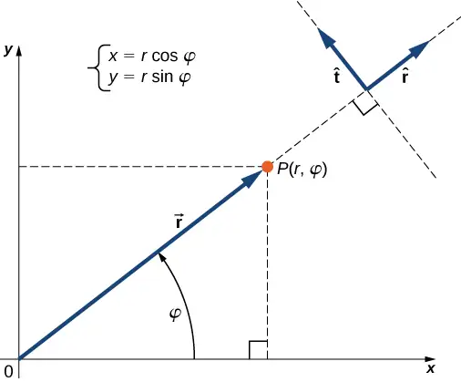
Example 2.6 Polar Coordinates
A treasure hunter finds one silver coin at a location 20.0 m away from a dry well in the direction \(20{}^{\circ}\) north of east and finds one gold coin at a location 10.0 m away from the well in the direction \(20{}^{\circ}\) north of west. What are the polar and rectangular coordinates of these findings with respect to the well?
Strategy
The well marks the origin of the coordinate system and east is the +x-direction. We identify radial distances from the locations to the origin, which are \(r_{S}=20.0\:\text{m}\) (for the silver coin) and \(r_{G}=10.0\:\text{m}\) (for the gold coin). To find the angular coordinates, we convert \(20{}^{\circ}\) to radians: \(20{}^{\circ}=\pi 20\text{/}180=\pi\text{/}9\). We use Equation 2.18 to find the x- and y-coordinates of the coins.
Solution
The angular coordinate of the silver coin is \(\phi_{S}=\pi\text{/}9\), whereas the angular coordinate of the gold coin is \(\phi_{G}=\pi-\pi\text{/}9=8\pi\text{/}9\). Hence, the polar coordinates of the silver coin are \((r_{S},\phi_{S})=(20.0\:\text{m},\pi\text{/}9)\) and those of the gold coin are \((r_{G},\phi_{G})=(10.0\:\text{m},8\pi\text{/}9)\). We substitute these coordinates into Equation 2.18 to obtain rectangular coordinates. For the gold coin, the coordinates are
For the silver coin, the coordinates are
Vectors in Three Dimensions¶
To specify the location of a point in space, we need three coordinates (x, y, z), where coordinates x and y specify locations in a plane, and coordinate z gives a vertical position above or below the plane. Three-dimensional space has three orthogonal directions, so we need not two but three unit vectors to define a three-dimensional coordinate system. In the Cartesian coordinate system, the first two unit vectors are the unit vector of the x-axis \(\mathbf{\hat{i}}\) and the unit vector of the y-axis \(\mathbf{\hat{j}}\). The third unit vector \(\mathbf{\hat{k}}\) is the direction of the z-axis (Figure 2.21). The order in which the axes are labeled, which is the order in which the three unit vectors appear, is important because it defines the orientation of the coordinate system. The order x-y-z, which is equivalent to the order \(\mathbf{\hat{i}}\) - \(\mathbf{\hat{j}}\) - \(\mathbf{\hat{k}}\), defines the standard right-handed coordinate system (positive orientation). Notice that while previously the y-axis was used for the upward direction, in three dimensions we usually choose z to represent the vertical. A right-handed coordinate system with z up and with one of the remaining axes pointing to the right and the other out of the page must have the y-axis pointing right and x out of the page, as illustrated here.
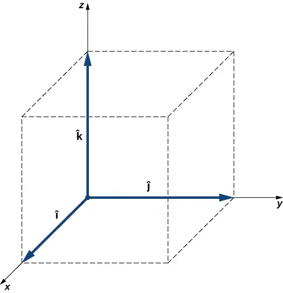
In three-dimensional space, vector \(\mathbf{\vec{A}}\) has three vector components: the x-component \({\mathbf{\vec{A}}}_{x}=A_{x}\mathbf{\hat{i}}\), which is the part of vector \(\mathbf{\vec{A}}\) along the x-axis; the y-component \({\mathbf{\vec{A}}}_{y}=A_{y}\mathbf{\hat{j}}\), which is the part of \(\mathbf{\vec{A}}\) along the y-axis; and the z-component \({\mathbf{\vec{A}}}_{z}=A_{z}\mathbf{\hat{k}}\), which is the part of the vector along the z-axis. A vector in three-dimensional space is the vector sum of its three vector components (Figure 2.22):
equation callout
If we know the coordinates of its origin \(b(x_{b},y_{b},z_{b})\) and of its end \(e(x_{e},y_{e},z_{e})\), its scalar components are obtained by taking their differences: \(A_{x}\) and \(A_{y}\) are given by Equation 2.13 and the z-component is given by
equation callout
Magnitude A is obtained by generalizing Equation 2.15 to three dimensions:
equation callout
This expression for the vector magnitude comes from applying the Pythagorean theorem twice. As seen in Figure 2.22, the diagonal in the xy-plane has length \(\sqrt{A_{x}^{2}+A_{y}^{2}}\) and its square adds to the square \(A_{z}^{2}\) to give \(A^{2}\). Note that when the z-component is zero, the vector lies entirely in the xy-plane and its description is reduced to two dimensions.
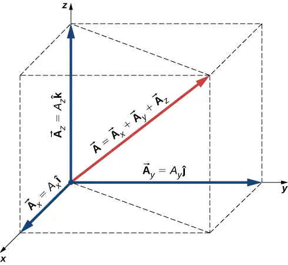
Example 2.7 Takeoff of a Drone
During a takeoff of IAI Heron (Figure 2.23), its position with respect to a control tower is 100 m above the ground, 300 m to the east, and 200 m to the north. One minute later, its position is 250 m above the ground, 1200 m to the east, and 2100 m to the north. What is the drone’s displacement vector with respect to the control tower? What is the magnitude of its displacement vector?
Strategy
We take the origin of the Cartesian coordinate system as the control tower. The direction of the +x-axis is given by unit vector \(\mathbf{\hat{i}}\) to the east, the direction of the +y-axis is given by unit vector \(\mathbf{\hat{j}}\) to the north, and the direction of the +z-axis is given by unit vector \(\mathbf{\hat{k}}\), which points up from the ground. The drone’s first position is the origin (or, equivalently, the beginning) of the displacement vector and its second position is the end of the displacement vector.
Solution
We identify b(300.0 m, 200.0 m, 100.0 m) and e(1200 m, 2100 m, 250 m), and use Equation 2.13 and Equation 2.20 to find the scalar components of the drone’s displacement vector:
We substitute these components into Equation 2.19 to find the displacement vector:
We substitute into Equation 2.21 to find the magnitude of the displacement:
Check Your Understanding
If the average velocity vector of the drone in the displacement in Example 2.7 is \(\mathbf{\vec{u}}=(15.0\mathbf{\hat{i}}+31.7\mathbf{\hat{j}}+2.5\mathbf{\hat{k}})\text{m}\text{/}\text{s}\), what is the magnitude of the drone’s velocity vector?
Answer
35.2 m/s = 126.7 km/h
2.3 Algebra of Vectors¶
Learning Objectives
By the end of this section, you will be able to:
- Apply analytical methods of vector algebra to find resultant vectors and to solve vector equations for unknown vectors.
- Interpret physical situations in terms of vector expressions.
Vectors can be added together and multiplied by scalars. Vector addition is associative (Equation 2.8) and commutative (Equation 2.7), and vector multiplication by a sum of scalars is distributive (Equation 2.9). Also, scalar multiplication by a sum of vectors is distributive:
equation callout
In this equation, \(\alpha\) is any number (a scalar). For example, a vector antiparallel to vector \(\mathbf{\vec{A}}=A_{x}\mathbf{\hat{i}}+A_{y}\mathbf{\hat{j}}+A_{z}\mathbf{\hat{k}}\) can be expressed simply by multiplying \(\mathbf{\vec{A}}\) by the scalar \(\alpha=-1\):
equation callout
Example 2.8 Direction of Motion
In a Cartesian coordinate system where \(\mathbf{\hat{i}}\) denotes geographic east, \(\mathbf{\hat{j}}\) denotes geographic north, and \(\mathbf{\hat{k}}\) denotes altitude above sea level, a military convoy advances its position through unknown territory with velocity \(\mathbf{\vec{v}}=(4.0\mathbf{\hat{i}}+3.0\mathbf{\hat{j}}+0.1\mathbf{\hat{k}})\text{km}\text{/}\text{h}\). If the convoy had to retreat, in what geographic direction would it be moving?
Solution
The velocity vector has the third component \({\mathbf{\vec{v}}}_{z}=(+0.1\text{km}\text{/}\text{h})\mathbf{\hat{k}}\), which says the convoy is climbing at a rate of 100 m/h through mountainous terrain. At the same time, its velocity is 4.0 km/h to the east and 3.0 km/h to the north, so it moves on the ground in direction \(\tan^{-1}(3\:\text{/}4)\approx 37{}^{\circ}\) north of east. If the convoy had to retreat, its new velocity vector \(\mathbf{\vec{u}}\) would have to be antiparallel to \(\mathbf{\vec{v}}\) and be in the form \(\mathbf{\vec{u}}=-\alpha\mathbf{\vec{v}}\), where \(\alpha\) is a positive number. Thus, the velocity of the retreat would be \(\mathbf{\vec{u}}=\alpha(-4.0\mathbf{\hat{i}}-3.0\mathbf{\hat{j}}-0.1\mathbf{\hat{k}})\text{km}\text{/}\text{h}\). The negative sign of the third component indicates the convoy would be descending. The direction angle of the retreat velocity is \(\tan^{-1}(-3\alpha\text{/}-4\alpha)\approx 37{}^{\circ}\) south of west. Therefore, the convoy would be moving on the ground in direction \(37{}^{\circ}\) south of west while descending on its way back.
The generalization of the number zero to vector algebra is called the null vector, denoted by \(\mathbf{\overrightarrow{0}}\). All components of the null vector are zero, \(\mathbf{\overrightarrow{0}}=0\mathbf{\hat{i}}+0\mathbf{\hat{j}}+0\mathbf{\hat{k}}\), so the null vector has no length and no direction.
Two vectors \(\mathbf{\vec{A}}\) and \(\mathbf{\vec{B}}\) are equal vectors if and only if their difference is the null vector:
This vector equation means we must have simultaneously \(A_{x}-B_{x}=0\), \(A_{y}-B_{y}=0\), and \(A_{z}-B_{z}=0\). Hence, we can write \(\mathbf{\vec{A}}=\mathbf{\vec{B}}\) if and only if the corresponding components of vectors \(\mathbf{\vec{A}}\) and \(\mathbf{\vec{B}}\) are equal:
equation callout
Two vectors are equal when their corresponding scalar components are equal.
Resolving vectors into their scalar components (i.e., finding their scalar components) and expressing them analytically in vector component form (given by Equation 2.19) allows us to use vector algebra to find sums or differences of many vectors analytically (i.e., without using graphical methods). For example, to find the resultant of two vectors \(\mathbf{\vec{A}}\) and \(\mathbf{\vec{B}}\), we simply add them component by component, as follows:
In this way, using Equation 2.24, scalar components of the resultant vector \(\mathbf{\vec{R}}=R_{x}\mathbf{\hat{i}}+R_{y}\mathbf{\hat{j}}+R_{z}\mathbf{\hat{k}}\) are the sums of corresponding scalar components of vectors \(\mathbf{\vec{A}}\) and \(\mathbf{\vec{B}}\):
Analytical methods can be used to find components of a resultant of many vectors. For example, if we are to sum up \(N\) vectors \({\mathbf{\vec{F}}}_{1},{\mathbf{\vec{F}}}_{2},{\mathbf{\vec{F}}}_{3},\ldots,{\mathbf{\vec{F}}}_{N}\), where each vector is \({\mathbf{\vec{F}}}_{k}=F_{kx}\mathbf{\hat{i}}+F_{ky}\mathbf{\hat{j}}+F_{kz}\mathbf{\hat{k}}\), the resultant vector \({\mathbf{\vec{F}}}_{R}\) is
Therefore, scalar components of the resultant vector are
equation callout
Having found the scalar components, we can write the resultant in vector component form:
Analytical methods for finding the resultant and, in general, for solving vector equations are very important in physics because many physical quantities are vectors. For example, we use this method in kinematics to find resultant displacement vectors and resultant velocity vectors, in mechanics to find resultant force vectors and the resultants of many derived vector quantities, and in electricity and magnetism to find resultant electric or magnetic vector fields.
Example 2.9 Analytical Computation of a Resultant
Three displacement vectors \(\mathbf{\vec{A}}\), \(\mathbf{\vec{B}}\), and \(\mathbf{\vec{C}}\) in a plane (Figure 2.13) are specified by their magnitudes A = 10.0, B = 7.0, and C = 8.0, respectively, and by their respective direction angles with the horizontal direction \(\alpha=35{}^{\circ},\) \(\beta=-110{}^{\circ}\), and \(\gamma=30{}^{\circ}\). The physical units of the magnitudes are centimeters. Resolve the vectors to their scalar components and find the following vector sums: (a) \(\mathbf{\vec{R}}=\mathbf{\vec{A}}+\mathbf{\vec{B}}+\mathbf{\vec{C}}\), (b) \(\mathbf{\vec{D}}=\mathbf{\vec{A}}-\mathbf{\vec{B}}\), and (c) \(\mathbf{\vec{S}}=\mathbf{\vec{A}}-3\mathbf{\vec{B}}+\mathbf{\vec{C}}\).
Strategy
First, we use Equation 2.17 to find the scalar components of each vector and then we express each vector in its vector component form given by Equation 2.12. Then, we use analytical methods of vector algebra to find the resultants.
Solution
We resolve the given vectors to their scalar components:
For (a) we may substitute directly into Equation 2.25 to find the scalar components of the resultant:
Therefore, the resultant vector is \(\mathbf{\vec{R}}=R_{x}\mathbf{\hat{i}}+R_{y}\mathbf{\hat{j}}=(12.7\mathbf{\hat{i}}+3.1\mathbf{\hat{j}})\text{cm}\).
For (b), we may want to write the vector difference as
Then, the scalar components of the vector difference are
Hence, the difference vector is \(\mathbf{\vec{D}}=D_{x}\mathbf{\hat{i}}+D_{y}\mathbf{\hat{j}}=(10.6\mathbf{\hat{i}}+12.3\mathbf{\hat{j}})\text{cm}\).
For (c), we can write vector \(\mathbf{\vec{S}}\) in the following explicit form:
Then, the scalar components of \(\mathbf{\vec{S}}\) are
The vector is \(\mathbf{\vec{S}}=S_{x}\mathbf{\hat{i}}+S_{y}\mathbf{\hat{j}}=(22.3\mathbf{\hat{i}}+29.5\mathbf{\hat{j}})\text{cm}\).
Significance
Having found the vector components, we can illustrate the vectors by graphing or we can compute magnitudes and direction angles, as shown in Figure 2.24. Results for the magnitudes in (b) and (c) can be compared with results for the same problems obtained with the graphical method, shown in Figure 2.14 and Figure 2.15. Notice that the analytical method produces exact results and its accuracy is not limited by the resolution of a ruler or a protractor, as it was with the graphical method used in Example 2.2 for finding this same resultant.
![Vector R has magnitude 13.11. The angle between R and the positive x direction is theta sub R equals 13.9 degrees. The components of R are R sub x on the x axis and R sub y on the y axis. Vector D has magnitude 16.23. The angle between D and the positive x direction is theta sub D equals 49.3 degrees. The components of D are D sub x on the x axis and D sub y on the y axis. Vector S has magnitude 36.95. The angle between S and the positive x direction is theta sub S equals 52.9 degrees. The components of S are S sub x on the x axis and S sub y on the y axis.](img/cnx-uphysics-02-03-illustr.webp)
Check Your Understanding
Three displacement vectors \(\mathbf{\vec{A}}\), \(\mathbf{\vec{B}}\), and \(\mathbf{\vec{F}}\) (Figure 2.13) are specified by their magnitudes A = 10.00, B = 7.00, and F = 20.00, respectively, and by their respective direction angles with the horizontal direction \(\alpha=35{}^{\circ}\), \(\beta=-110{}^{\circ}\), and \(\phi=110{}^{\circ}\). The physical units of the magnitudes are centimeters. Use the analytical method to find vector \(\mathbf{\vec{G}}=\mathbf{\vec{A}}+2\mathbf{\vec{B}}-\mathbf{\vec{F}}\). Verify that
G = 28.15 cm and that \(\theta_{G}=-68.65{}^{\circ}\).
Answer
\(\mathbf{\vec{G}}=(10.25\mathbf{\hat{i}}-26.22\mathbf{\hat{j}})\text{cm}\)
Example 2.10 The Tug-of-War Game
Four dogs named Astro, Balto, Clifford, and Dug play a tug-of-war game with a toy (Figure 2.25). Astro pulls on the toy in direction \(\alpha=55{}^{\circ}\) south of east, Balto pulls in direction \(\beta=60{}^{\circ}\) east of north, and Clifford pulls in direction \(\gamma=55{}^{\circ}\) west of north. Astro pulls strongly with 160.0 units of force (N), which we abbreviate as A = 160.0 N. Balto pulls even stronger than Astro with a force of magnitude B = 200.0 N, and Clifford pulls with a force of magnitude C = 140.0 N. When Dug pulls on the toy in such a way that his force balances out the resultant of the other three forces, the toy does not move in any direction. With how big a force and in what direction must Dug pull on the toy for this to happen?
![Illustration of 4 dogs pulling on a toy. The toy is at the origin of a coordinate system, with plus x aligned with east and plus y with north. Ang is pulling at an angle alpha which is 55 degrees clockwise from the plus x (east) direction. Bing is pulling at an angle beta which is 60 degrees clockwise from the plus y (north) direction. Chang is pulling at an angle gamma which is 55 degrees counterclockwise from the plus y (north) direction. Dong is pulling in an unspecified direction in the third quadrant.](img/cnx-uphysics-02-03-dogs-new.webp)
Strategy
We assume that east is the direction of the positive x-axis and north is the direction of the positive y-axis. As in Example 2.9, we have to resolve the three given forces— \(\mathbf{\vec{A}}\) (the pull from Astro), \(\mathbf{\vec{B}}\) (the pull from Balto), and \(\mathbf{\vec{C}}\) (the pull from Clifford)—into their scalar components and then find the scalar components of the resultant vector \(\mathbf{\vec{R}}=\mathbf{\vec{A}}+\mathbf{\vec{B}}+\mathbf{\vec{C}}\). When the pulling force \(\mathbf{\vec{D}}\) from Dug balances out this resultant, the sum of \(\mathbf{\vec{D}}\) and \(\mathbf{\vec{R}}\) must give the null vector \(\mathbf{\vec{D}}+\mathbf{\vec{R}}=\mathbf{\overrightarrow{0}}\). This means that \(\mathbf{\vec{D}}=-\mathbf{\vec{R}}\), so the pull from Dug must be antiparallel to \(\mathbf{\vec{R}}\).
Solution
The direction angles are \(\theta_{A}=-\alpha=-55{}^{\circ}\), \(\theta_{B}=90{}^{\circ}-\beta=30{}^{\circ}\), and \(\theta_{C}=90{}^{\circ}+\gamma=145{}^{\circ}\), and substituting them into Equation 2.17 gives the scalar components of the three given forces:
Now we compute scalar components of the resultant vector \(\mathbf{\vec{R}}=\mathbf{\vec{A}}+\mathbf{\vec{B}}+\mathbf{\vec{C}}\):
The antiparallel vector to the resultant \(\mathbf{\vec{R}}\) is
The magnitude of Dug’s pulling force is
The direction of Dug’s pulling force is
Dug pulls in the direction \(18.1{}^{\circ}\) south of west because both components are negative, which means the pull vector lies in the third quadrant (Figure 2.19).
Check Your Understanding
Suppose that Balto in Example 2.10 leaves the game to attend to more important matters, but Astro, Clifford, and Dug continue playing. Astro and Clifford's pull on the toy does not change, but Dug runs around and bites on the toy in a different place. With how big a force and in what direction must Dug pull on the toy now to balance out the combined pulls from Clifford and Astro? Illustrate this situation by drawing a vector diagram indicating all forces involved.
Answer
D = 55.7 N; direction \(65.7{}^{\circ}\) north of east
Example 2.11 Vector Algebra
Find the magnitude of the vector \(\mathbf{\vec{C}}\) that satisfies the equation \(2\mathbf{\vec{A}}-6\mathbf{\vec{B}}+3\mathbf{\vec{C}}=2\mathbf{\hat{j}}\), where \(\mathbf{\vec{A}}=\mathbf{\hat{i}}-2\mathbf{\hat{k}}\) and \(\mathbf{\vec{B}}=-\mathbf{\hat{j}}+\mathbf{\hat{k}}\text{/}2\).
Strategy
We first solve the given equation for the unknown vector \(\mathbf{\vec{C}}\). Then we substitute \(\mathbf{\vec{A}}\) and \(\mathbf{\vec{B}}\); group the terms along each of the three directions \(\mathbf{\hat{i}}\), \(\mathbf{\hat{j}}\), and \(\mathbf{\hat{k}}\); and identify the scalar components \(C_{x}\), \(C_{y}\), and \(C_{z}\). Finally, we substitute into Equation 2.21 to find magnitude C.
Solution
The components are \(C_{x}=-2\:\text{/}3\), \(C_{y}=-4\text{/}3\), and \(C_{z}=7\:\text{/}3\), and substituting into Equation 2.21 gives
Example 2.12 Displacement of a Skier
Starting at a ski lodge, a cross-country skier goes 5.0 km north, then 3.0 km west, and finally 4.0 km southwest before taking a rest. Find their total displacement vector relative to the lodge when they are at the rest point. How far and in what direction must they ski from the rest point to return directly to the lodge?
Strategy
We assume a rectangular coordinate system with the origin at the ski lodge and with the unit vector \(\mathbf{\hat{i}}\) pointing east and the unit vector \(\mathbf{\hat{j}}\) pointing north. There are three displacements: \({\mathbf{\vec{D}}}_{1}\), \({\mathbf{\vec{D}}}_{2}\), and \({\mathbf{\vec{D}}}_{3}\). We identify their magnitudes as \(D_{1}=5.0\:\text{km}\), \(D_{2}=3.0\:\text{km}\), and \(D_{3}=4.0\:\text{km}\). We identify their directions are the angles \(\theta_{1}=90{}^{\circ}\), \(\theta_{2}=180{}^{\circ}\), and \(\theta_{3}=180{}^{\circ}+45{}^{\circ}=225{}^{\circ}\). We resolve each displacement vector to its scalar components and substitute the components into Equation 2.25 to obtain the scalar components of the resultant displacement \(\mathbf{\vec{D}}\) from the lodge to the rest point. On the way back from the rest point to the lodge, the displacement is \(\mathbf{\vec{B}}=-\mathbf{\vec{D}}\). Finally, we find the magnitude and direction of \(\mathbf{\vec{B}}\).
Solution
Scalar components of the displacement vectors are
Scalar components of the net displacement vector are
Hence, the skier’s net displacement vector is \(\mathbf{\vec{D}}=D_{x}\mathbf{\hat{i}}+D_{y}\mathbf{\hat{j}}=(-5.8\mathbf{\hat{i}}+2.2\mathbf{\hat{j}})\text{km}\). On the way back to the lodge, their displacement is \(\mathbf{\vec{B}}=-\mathbf{\vec{D}}=-(-5.8\mathbf{\hat{i}}+2.2\mathbf{\hat{j}})\text{km}=(5.8\mathbf{\hat{i}}-2.2\mathbf{\hat{j}})\text{km}\). Its magnitude is \(B=\sqrt{B_{x}^{2}+B_{y}^{2}}=\sqrt{{(5.8)}^{2}+{(-2.2)}^{2}}\:\text{km}=6.2\:\text{km}\) and its direction angle is \(\theta=\tan^{-1}(-2.2\text{/}5.8)=-20.8{}^{\circ}\). Therefore, to return to the lodge, they must go 6.2 km in a direction about \(21{}^{\circ}\) south of east.
Significance
Notice that no figure is needed to solve this problem by the analytical method. Figures are required when using a graphical method; however, we can check if our solution makes sense by sketching it, which is a useful final step in solving any vector problem.
Example 2.13 Displacement of a Jogger
A jogger runs up a flight of 200 identical steps to the top of a hill and then runs along the top of the hill 50.0 m before he stops at a drinking fountain (Figure 2.26). His displacement vector from point A at the bottom of the steps to point B at the fountain is \({\mathbf{\vec{D}}}_{AB}=(-90.0\mathbf{\hat{i}}+30.0\mathbf{\hat{j}})\text{m}\). What is the height and width of each step in the flight? What is the actual distance the jogger covers? If he makes a loop and returns to point A, what is his net displacement vector?
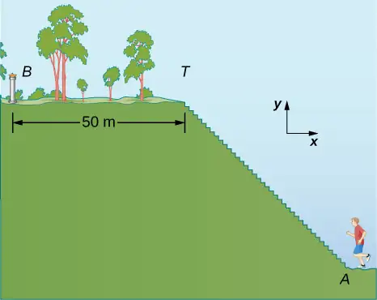
Strategy
The displacement vector \({\mathbf{\vec{D}}}_{AB}\) is the vector sum of the jogger’s displacement vector \({\mathbf{\vec{D}}}_{AT}\) along the stairs (from point A at the bottom of the stairs to point T at the top of the stairs) and his displacement vector \({\mathbf{\vec{D}}}_{TB}\) on the top of the hill (from point T at the top of the stairs to the fountain at point B). We must find the horizontal and the vertical components of \({\mathbf{\vec{D}}}_{AT}\). If each step has width w and height h, the horizontal component of \({\mathbf{\vec{D}}}_{AT}\) must have a length of 200w and the vertical component must have a length of 200h. The actual distance the jogger covers is the sum of the distance he runs up the stairs and the distance of 50.0 m that he runs along the top of the hill.
Solution
In the coordinate system indicated in Figure 2.26, the jogger’s displacement vector on the top of the hill is \({\mathbf{\vec{D}}}_{TB}=(-50.0\:\text{m})\mathbf{\hat{i}}\). His net displacement vector is
Therefore, his displacement vector \({\mathbf{\vec{D}}}_{AT}\) along the stairs is
Its scalar components are \(D_{ATx}=-40.0\:\text{m}\) and \(D_{ATy}=30.0\:\text{m}\). Therefore, we must have
Hence, the step width is w = 40.0 m/200 = 0.2 m = 20 cm, and the step height is h = 30.0 m/200 = 0.15 m = 15 cm. The distance that the jogger covers along the stairs is
Thus, the actual distance he runs is \(D_{AT}+D_{TB}=50.0\:\text{m}+50.0\:\text{m}=100.0\:\text{m}\). When he makes a loop and comes back from the fountain to his initial position at point A, the total distance he covers is twice this distance, or 200.0 m. However, his net displacement vector is zero, because when his final position is the same as his initial position, the scalar components of his net displacement vector are zero (Equation 2.13).
In many physical situations, we often need to know the direction of a vector. For example, we may want to know the direction of a magnetic field vector at some point or the direction of motion of an object. We have already said direction is given by a unit vector, which is a dimensionless entity—that is, it has no physical units associated with it. When the vector in question lies along one of the axes in a Cartesian system of coordinates, the answer is simple, because then its unit vector of direction is either parallel or antiparallel to the direction of the unit vector of an axis. For example, the direction of vector \(\mathbf{\vec{d}}=-5\:\text{m}\mathbf{\hat{i}}\) is unit vector \(\mathbf{\hat{d}}=-\mathbf{\hat{i}}\). The general rule of finding the unit vector \(\mathbf{\hat{V}}\) of direction for any vector \(\mathbf{\vec{V}}\) is to divide it by its magnitude V:
equation callout
We see from this expression that the unit vector of direction is indeed dimensionless because the numerator and the denominator in Equation 2.26 have the same physical unit. In this way, Equation 2.26 allows us to express the unit vector of direction in terms of unit vectors of the axes. The following example illustrates this principle.
Example 2.14 The Unit Vector of Direction
If the velocity vector of the military convoy in Example 2.8 is \(\mathbf{\vec{v}}=(4.000\mathbf{\hat{i}}+3.000\mathbf{\hat{j}}+0.100\mathbf{\hat{k}})\text{km}\text{/}\text{h}\), what is the unit vector of its direction of motion?
Strategy
The unit vector of the convoy’s direction of motion is the unit vector \(\mathbf{\hat{v}}\) that is parallel to the velocity vector. The unit vector is obtained by dividing a vector by its magnitude, in accordance with Equation 2.26.
Solution
The magnitude of the vector \(\mathbf{\vec{v}}\) is
To obtain the unit vector \(\mathbf{\hat{v}}\), divide \(\mathbf{\vec{v}}\) by its magnitude:
Significance
Note that when using the analytical method with a calculator, it is advisable to carry out your calculations to at least three decimal places and then round off the final answer to the required number of significant figures, which is the way we performed calculations in this example. If you round off your partial answer too early, you risk your final answer having a huge numerical error, and it may be far off from the exact answer or from a value measured in an experiment.
Check Your Understanding
Verify that vector \(\mathbf{\hat{v}}\) obtained in Example 2.14 is indeed a unit vector by computing its magnitude. If the convoy in Example 2.8 was moving across a desert flatland—that is, if the third component of its velocity was zero—what is the unit vector of its direction of motion? Which geographic direction does it represent?
Answer
\(\mathbf{\hat{v}}=0.8\mathbf{\hat{i}}+0.6\mathbf{\hat{j}}\), \(36.87{}^{\circ}\) north of east
2.4 Products of Vectors¶
Learning Objectives
By the end of this section, you will be able to:
- Explain the difference between the scalar product and the vector product of two vectors.
- Determine the scalar product of two vectors.
- Determine the vector product of two vectors.
- Describe how the products of vectors are used in physics.
A vector can be multiplied by another vector but may not be divided by another vector. There are two kinds of products of vectors used broadly in physics and engineering. One kind of multiplication is a scalar multiplication of two vectors. Taking a scalar product of two vectors results in a number (a scalar), as its name indicates. Scalar products are used to define work and energy relations. For example, the work that a force (a vector) performs on an object while causing its displacement (a vector) is defined as a scalar product of the force vector with the displacement vector. A quite different kind of multiplication is a vector multiplication of vectors. Taking a vector product of two vectors returns as a result a vector, as its name suggests. Vector products are used to define other derived vector quantities. For example, in describing rotations, a vector quantity called torque is defined as a vector product of an applied force (a vector) and its distance from pivot to force (a vector). It is important to distinguish between these two kinds of vector multiplications because the scalar product is a scalar quantity and a vector product is a vector quantity.
The Scalar Product of Two Vectors (the Dot Product)¶
Scalar multiplication of two vectors yields a scalar product.
Scalar Product (Dot Product)
The scalar product \(\mathbf{\vec{A}}\cdot\mathbf{\vec{B}}\) of two vectors \(\mathbf{\vec{A}}\) and \(\mathbf{\vec{B}}\) is a number defined by the equation
where \(\phi\) is the angle between the vectors (shown in Figure 2.27). The scalar product is also called the dot product because of the dot notation that indicates it.
In the definition of the dot product, the direction of angle \(\phi\) does not matter, and \(\phi\) can be measured from either of the two vectors to the other because \(\cos\:\phi=\cos\:(-\phi)=\cos\:(2\pi-\phi)\). The dot product is a negative number when \(90{}^{\circ} \lt \phi\le 180{}^{\circ}\) and is a positive number when \(0{}^{\circ}\le\phi \lt 90{}^{\circ}\). Moreover, the dot product of two parallel vectors is \(\mathbf{\vec{A}}\cdot\mathbf{\vec{B}}=AB\:\cos\:0{}^{\circ}=AB\), and the dot product of two antiparallel vectors is \(\mathbf{\vec{A}}\cdot\mathbf{\vec{B}}=AB\:\cos\:180{}^{\circ}=-AB\). The scalar product of two orthogonal vectors vanishes: \(\mathbf{\vec{A}}\cdot\mathbf{\vec{B}}=AB\:\cos\:90{}^{\circ}=0\). The scalar product of a vector with itself is the square of its magnitude:
![Figure a: vectors A and B are shown tail to tail. A is longer than B. The angle between them is phi. Figure b: Vector B is extended using a dashed line and another dashed line is drawn from the head of A to the extension of B, perpendicular to B. A sub perpendicular is equal to A magnitude times cosine phi and is the distance from the vertex where the tails of A and B meet to the location where the perpendicular from A to B meets the extension of B. Figure c: A dashed line is drawn from the head of B to A, perpendicular to A. The distance from the tails of A and B to where the dashed line meets B is B sub perpendicular and is equal to magnitude B times cosine phi.](img/cnx-uphysics-02-04-prod-s.webp)
Example 2.15 The Scalar Product
For the vectors shown in Figure 2.13, find the scalar product \(\mathbf{\vec{A}}\cdot\mathbf{\vec{F}}\).
Strategy
From Figure 2.13, the magnitudes of vectors \(\mathbf{\vec{A}}\) and \(\mathbf{\vec{F}}\) are A = 10.0 and F = 20.0. Angle \(\theta\), between them, is the difference: \(\theta=\phi-\alpha=110{}^{\circ}-35{}^{\circ}=75{}^{\circ}\). Substituting these values into Equation 2.27 gives the scalar product.
Solution
A straightforward calculation gives us
Check Your Understanding
For the vectors given in Figure 2.13, find the scalar products \(\mathbf{\vec{A}}\cdot\mathbf{\vec{B}}\) and \(\mathbf{\vec{F}}\cdot\mathbf{\vec{C}}\).
Answer
\(\mathbf{\vec{A}}\cdot\mathbf{\vec{B}}=-57.3\), \(\mathbf{\vec{F}}\cdot\mathbf{\vec{C}}=27.8\)
In the Cartesian coordinate system, scalar products of the unit vector of an axis with other unit vectors of axes always vanish because these unit vectors are orthogonal:
In these equations, we use the fact that the magnitudes of all unit vectors are one: \(|\mathbf{\hat{i}}|=|\mathbf{\hat{j}}|=|\mathbf{\hat{k}}|=1\). For unit vectors of the axes, Equation 2.28 gives the following identities:
The scalar product \(\mathbf{\vec{A}}\cdot\mathbf{\vec{B}}\) can also be interpreted as either the product of B with the projection \(A_{ǁ}\) of vector \(\mathbf{\vec{A}}\) onto the direction of vector \(\mathbf{\vec{B}}\) (Figure 2.27(b)) or the product of A with the projection \(B_{ǁ}\) of vector \(\mathbf{\vec{B}}\) onto the direction of vector \(\mathbf{\vec{A}}\) (Figure 2.27(c)):
For example, in the rectangular coordinate system in a plane, the scalar x-component of a vector is its dot product with the unit vector \(\mathbf{\hat{i}}\), and the scalar y-component of a vector is its dot product with the unit vector \(\mathbf{\hat{j}}\):
Scalar multiplication of vectors is commutative,
equation callout
and obeys the distributive law:
equation callout
We can use the commutative and distributive laws to derive various relations for vectors, such as expressing the dot product of two vectors in terms of their scalar components.
Check Your Understanding
For vector \(\mathbf{\vec{A}}=A_{x}\mathbf{\hat{i}}+A_{y}\mathbf{\hat{j}}+A_{z}\mathbf{\hat{k}}\) in a rectangular coordinate system, use Equation 2.29 through Equation 2.32 to show that \(\mathbf{\vec{A}}\cdot\mathbf{\hat{i}}=A_{x}\), \(\mathbf{\vec{A}}\cdot\mathbf{\hat{j}}=A_{y}\), and \(\mathbf{\vec{A}}\cdot\mathbf{\hat{k}}=A_{z}\).
When the vectors in Equation 2.27 are given in their vector component forms,
we can compute their scalar product as follows:
Since scalar products of two different unit vectors of axes give zero, and scalar products of unit vectors with themselves give one (see Equation 2.29 and Equation 2.30), there are only three nonzero terms in this expression. Thus, the scalar product simplifies to
equation callout
We can use Equation 2.33 for the scalar product in terms of scalar components of vectors to find the angle between two vectors. When we divide Equation 2.27 by AB, we obtain the equation for \(\cos\:\phi\), into which we substitute Equation 2.33:
equation callout
Angle \(\phi\) between vectors \(\mathbf{\vec{A}}\) and \(\mathbf{\vec{B}}\) is obtained by taking the inverse cosine of the expression in Equation 2.34.
Example 2.16 Angle between Two Forces
Three dogs are pulling on a stick in different directions, as shown in Figure 2.28. The first dog pulls with force \({\mathbf{\vec{F}}}_{1}=(10.0\mathbf{\hat{i}}-20.4\mathbf{\hat{j}}+2.0\mathbf{\hat{k}})\text{N}\), the second dog pulls with force \({\mathbf{\vec{F}}}_{2}=(-15.0\mathbf{\hat{i}}-6.2\mathbf{\hat{k}})\text{N}\), and the third dog pulls with force \({\mathbf{\vec{F}}}_{3}=(5.0\mathbf{\hat{i}}+12.5\mathbf{\hat{j}})\text{N}\). What is the angle between forces \({\mathbf{\vec{F}}}_{1}\) and \({\mathbf{\vec{F}}}_{2}\)?
Strategy
The components of force vector \({\mathbf{\vec{F}}}_{1}\) are \(F_{1x}=10.0\:\text{N}\), \(F_{1y}=-20.4\:\text{N}\), and \(F_{1z}=2.0\:\text{N}\), whereas those of force vector \({\mathbf{\vec{F}}}_{2}\) are \(F_{2x}=-15.0\:\text{N}\), \(F_{2y}=0.0\:\text{N}\), and \(F_{2z}=-6.2\:\text{N}\). Computing the scalar product of these vectors and their magnitudes, and substituting into Equation 2.34 gives the angle of interest.
Solution
The magnitudes of forces \({\mathbf{\vec{F}}}_{1}\) and \({\mathbf{\vec{F}}}_{2}\) are
and
Substituting the scalar components into Equation 2.33 yields the scalar product
Finally, substituting everything into Equation 2.34 gives the angle
Significance
Notice that when vectors are given in terms of the unit vectors of axes, we can find the angle between them without knowing the specifics about the geographic directions the unit vectors represent. Here, for example, the +x-direction might be to the east and the +y-direction might be to the north. But, the angle between the forces in the problem is the same if the +x-direction is to the west and the +y-direction is to the south.
Check Your Understanding
Find the angle between forces \({\mathbf{\vec{F}}}_{1}\) and \({\mathbf{\vec{F}}}_{3}\) in Example 2.16.
Answer
\(131.9{}^{\circ}\)
Example 2.17 The Work of a Force
When force \(\mathbf{\vec{F}}\) pulls on an object and when it causes its displacement \(\mathbf{\vec{D}}\), we say the force performs work. The amount of work the force does is the scalar product \(\mathbf{\vec{F}}\cdot\mathbf{\vec{D}}\). If the stick in Example 2.16 moves momentarily and gets displaced by vector \(\mathbf{\vec{D}}=(-7.9\mathbf{\hat{j}}-4.2\mathbf{\hat{k}})\:\text{cm}\), how much work is done by the third dog in Example 2.16?
Strategy
We compute the scalar product of displacement vector \(\mathbf{\vec{D}}\) with force vector \({\mathbf{\vec{F}}}_{3}=(5.0\mathbf{\hat{i}}+12.5\mathbf{\hat{j}})\text{N}\), which is the pull from the third dog. Let’s use \(W_{3}\) to denote the work done by force \({\mathbf{\vec{F}}}_{3}\) on displacement \(\mathbf{\vec{D}}\).
Solution
Calculating the work is a straightforward application of the dot product:
Significance
The SI unit of work is called the joule \((\text{J})\), where 1 J = 1 \(\text{N}\cdot\text{m}\). The unit \(\text{cm}\cdot\text{N}\) can be written as \({10}^{-2}\text{m}\cdot\text{N}={10}^{-2}\text{J}\), so the answer can be expressed as \(W_{3}=-0.9875\:\text{J}\approx-1.0\:\text{J}\).
Check Your Understanding
How much work is done by the first dog and by the second dog in Example 2.16 on the displacement in Example 2.17?
Answer
\(W_{1}=1.5\:\text{J}\), \(W_{2}=0.3\:\text{J}\)
The Vector Product of Two Vectors (the Cross Product)¶
Vector multiplication of two vectors yields a vector product.
Vector Product (Cross Product)
The vector product of two vectors \(\mathbf{\vec{A}}\) and \(\mathbf{\vec{B}}\) is denoted by \(\mathbf{\vec{A}}\:\times\:\mathbf{\vec{B}}\) and is often referred to as a cross product. The vector product is a vector that has its direction perpendicular to both vectors \(\mathbf{\vec{A}}\) and \(\mathbf{\vec{B}}\). In other words, vector \(\mathbf{\vec{A}}\:\times\:\mathbf{\vec{B}}\) is perpendicular to the plane that contains vectors \(\mathbf{\vec{A}}\) and \(\mathbf{\vec{B}}\), as shown in Figure 2.29. The magnitude of the vector product is defined as
where angle \(\phi\), between the two vectors, is measured from vector \(\mathbf{\vec{A}}\) (first vector in the product) to vector \(\mathbf{\vec{B}}\) (second vector in the product), as indicated in Figure 2.29, and is between \(0{}^{\circ}\) and \(180{}^{\circ}\).
According to Equation 2.35, the vector product vanishes for pairs of vectors that are either parallel \((\phi=0{}^{\circ})\) or antiparallel \((\phi=180{}^{\circ})\) because \(\sin\:0{}^{\circ}=\sin\:180{}^{\circ}=0\).
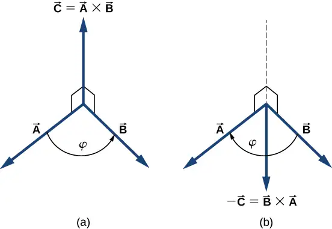
On the line perpendicular to the plane that contains vectors \(\mathbf{\vec{A}}\) and \(\mathbf{\vec{B}}\) there are two alternative directions—either up or down, as shown in Figure 2.29—and the direction of the vector product may be either one of them. In the standard right-handed orientation, where the angle between vectors is measured counterclockwise from the first vector, vector \(\mathbf{\vec{A}}\:\times\:\mathbf{\vec{B}}\) points upward, as seen in Figure 2.29(a). If we reverse the order of multiplication, so that now \(\mathbf{\vec{B}}\) comes first in the product, then vector \(\mathbf{\vec{B}}\:\times\:\mathbf{\vec{A}}\) must point downward, as seen in Figure 2.29(b). This means that vectors \(\mathbf{\vec{A}}\:\times\:\mathbf{\vec{B}}\) and \(\mathbf{\vec{B}}\:\times\:\mathbf{\vec{A}}\) are antiparallel to each other and that vector multiplication is not commutative but anticommutative. The anticommutative property means the vector product reverses the sign when the order of multiplication is reversed:
equation callout
The corkscrew right-hand rule is a common mnemonic used to determine the direction of the vector product. As shown in Figure 2.30, a corkscrew is placed in a direction perpendicular to the plane that contains vectors \(\mathbf{\vec{A}}\) and \(\mathbf{\vec{B}}\), and its handle is turned in the direction from the first to the second vector in the product. The direction of the cross product is given by the progression of the corkscrew.
You can also use your right hand, without the use of a corkscrew, by positioning your right hand so that your fingers point in the direction of A and they curl toward B. The cross product must be perpendicular to both A and B, and so you are choosing from only two possible directions. Your thumb now points toward the correct choice.
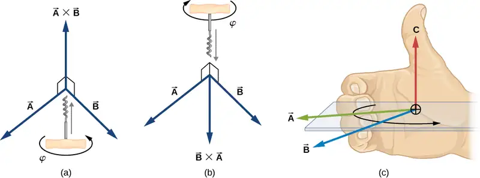
Example 2.18 The Torque of a Force
The mechanical advantage that a familiar tool called a wrench provides (Figure 2.31) depends on magnitude F of the applied force, on its direction with respect to the wrench handle, and on how far from the nut this force is applied. The distance R from the nut to the point where force vector \(\mathbf{\vec{F}}\) is attached is represented by the radial vector \(\mathbf{\vec{R}}\). The physical vector quantity that makes the nut turn is called torque (denoted by \(\vec{\tau})\), and it is the vector product of the distance between the pivot to force with the force: \(\vec{\tau}=\mathbf{\vec{R}}\:\times\:\mathbf{\vec{F}}\).
To loosen a rusty nut, a 20.00-N force is applied to the wrench handle at angle \(\phi=40{}^{\circ}\) and at a distance of 0.25 m from the nut, as shown in Figure 2.31(a). Find the magnitude and direction of the torque applied to the nut. What would the magnitude and direction of the torque be if the force were applied at angle \(\phi=45{}^{\circ}\), as shown in Figure 2.31(b)? For what value of angle \(\phi\) does the torque have the largest magnitude?
![Figure a: a wrench grips a nut. A force F is applied to the wrench at a distance R from the center of the nut. The vector R is the vector from the center of the nut to the location where the force is being applied. The force direction is at an angle phi, measured counterclockwise from the direction of the vector R. Figure b: a wrench grips a nut. A force F is applied to the wrench at a distance R from the center of the nut. The vector R is the vector from the center of the nut to the location where the force is being applied. The force direction is at an angle phi, measured clockwise from the direction of the vector R.](img/cnx-uphysics-02-04-wrench.webp)
Strategy
We adopt the frame of reference shown in Figure 2.31, where vectors \(\mathbf{\vec{R}}\) and \(\mathbf{\vec{F}}\) lie in the xy-plane and the origin is at the position of the nut. The radial direction along vector \(\mathbf{\vec{R}}\) (pointing away from the origin) is the reference direction for measuring the angle \(\phi\) because \(\mathbf{\vec{R}}\) is the first vector in the vector product \(\vec{\tau}=\mathbf{\vec{R}}\:\times\:\mathbf{\vec{F}}\). Vector \(\vec{\tau}\) must lie along the z-axis because this is the axis that is perpendicular to the xy-plane, where both \(\mathbf{\vec{R}}\) and \(\mathbf{\vec{F}}\) lie. To compute the magnitude \(\tau\), we use Equation 2.35. To find the direction of \(\vec{\tau}\), we use the corkscrew right-hand rule (Figure 2.30).
Solution
For the situation in (a), the corkscrew rule gives the direction of \(\mathbf{\vec{R}}\:\times\:\mathbf{\vec{F}}\) in the positive direction of the z-axis. Physically, it means the torque vector \(\vec{\tau}\) points out of the page, perpendicular to the wrench handle. We identify F = 20.00 N and R = 0.25 m, and compute the magnitude using Equation 2.35:
For the situation in (b), the corkscrew rule gives the direction of \(\mathbf{\vec{R}}\:\times\:\mathbf{\vec{F}}\) in the negative direction of the z-axis. Physically, it means the vector \(\vec{\tau}\) points into the page, perpendicular to the wrench handle. The magnitude of this torque is
The torque has the largest value when \(\sin\:\phi=1\), which happens when \(\phi=90{}^{\circ}\). Physically, it means the wrench is most effective—giving us the best mechanical advantage—when we apply the force perpendicular to the wrench handle. For the situation in this example, this best-torque value is \(\tau_{\text{best}}=RF=(0.25\:\text{m})(20.00\:\text{N})=5.00\:\text{N}\cdot\text{m}\).
Significance
When solving mechanics problems, we often do not need to use the corkscrew rule at all, as we’ll see now in the following equivalent solution. Notice that once we have identified that vector \(\mathbf{\vec{R}}\:\times\:\mathbf{\vec{F}}\) lies along the z-axis, we can write this vector in terms of the unit vector \(\mathbf{\hat{k}}\) of the z-axis:
In this equation, the number that multiplies \(\mathbf{\hat{k}}\) is the scalar z-component of the vector \(\mathbf{\vec{R}}\:\times\:\mathbf{\vec{F}}\). In the computation of this component, care must be taken that the angle \(\phi\) is measured counterclockwise from \(\mathbf{\vec{R}}\) (first vector) to \(\mathbf{\vec{F}}\) (second vector). Following this principle for the angles, we obtain \(RF\:\sin\:(+40{}^{\circ})=+3.2\:\text{N}\cdot\text{m}\) for the situation in (a), and we obtain \(RF\:\sin\:(-45{}^{\circ})=-3.5\:\text{N}\cdot\text{m}\) for the situation in (b). In the latter case, the angle is negative because the graph in Figure 2.31 indicates the angle is measured clockwise; but, the same result is obtained when this angle is measured counterclockwise because \(+(360{}^{\circ}-45{}^{\circ})=+315{}^{\circ}\) and \(\sin\:(+315{}^{\circ})=\sin\:(-45{}^{\circ})\). In this way, we obtain the solution without reference to the corkscrew rule. For the situation in (a), the solution is \(\mathbf{\vec{R}}\:\times\:\mathbf{\vec{F}}=+3.2\:\text{N}\cdot\text{m}\mathbf{\hat{k}}\); for the situation in (b), the solution is \(\mathbf{\vec{R}}\:\times\:\mathbf{\vec{F}}=-3.5\:\text{N}\cdot\text{m}\mathbf{\hat{k}}\).
Check Your Understanding
For the vectors given in Figure 2.13, find the vector products \(\mathbf{\vec{A}}\:\times\:\mathbf{\vec{B}}\) and \(\mathbf{\vec{C}}\:\times\:\mathbf{\vec{F}}\).
Answer
\(\mathbf{\vec{A}}\:\times\:\mathbf{\vec{B}}=-40.1\mathbf{\hat{k}}\) or, equivalently, \(|\mathbf{\vec{A}}\:\times\:\mathbf{\vec{B}}|=40.1\), and the direction is into the page; \(\mathbf{\vec{C}}\:\times\:\mathbf{\vec{F}}=+157.6\mathbf{\hat{k}}\) or, equivalently, \(|\mathbf{\vec{C}}\:\times\:\mathbf{\vec{F}}|=157.6\), and the direction is out of the page.
Similar to the dot product (Equation 2.32), the cross product has the following distributive property:
equation callout
The distributive property is applied frequently when vectors are expressed in their component forms, in terms of unit vectors of Cartesian axes.
When we apply the definition of the cross product, Equation 2.35, to unit vectors \(\mathbf{\hat{i}}\), \(\mathbf{\hat{j}}\), and \(\mathbf{\hat{k}}\) that define the positive x-, y-, and z-directions in space, we find that
All other cross products of these three unit vectors must be vectors of unit magnitudes because \(\mathbf{\hat{i}}\), \(\mathbf{\hat{j}}\), and \(\mathbf{\hat{k}}\) are orthogonal. For example, for the pair \(\mathbf{\hat{i}}\) and \(\mathbf{\hat{j}}\), the magnitude is \(|\mathbf{\hat{i}}\:\times\:\mathbf{\hat{j}}|=ij\:\sin\:90{}^{\circ}=(1)(1)(1)=1\). The direction of the vector product \(\mathbf{\hat{i}}\:\times\:\mathbf{\hat{j}}\) must be orthogonal to the xy-plane, which means it must be along the z-axis. The only unit vectors along the z-axis are \(-\mathbf{\hat{k}}\) or \(+\mathbf{\hat{k}}\). By the corkscrew rule, the direction of vector \(\mathbf{\hat{i}}\:\times\:\mathbf{\hat{j}}\) must be parallel to the positive z-axis. Therefore, the result of the multiplication \(\mathbf{\hat{i}}\:\times\:\mathbf{\hat{j}}\) is identical to \(+\mathbf{\hat{k}}\). We can repeat similar reasoning for the remaining pairs of unit vectors. The results of these multiplications are
equation callout
Notice that in Equation 2.39, the three unit vectors \(\mathbf{\hat{i}}\), \(\mathbf{\hat{j}}\), and \(\mathbf{\hat{k}}\) appear in the cyclic order shown in a diagram in Figure 2.32(a). The cyclic order means that in the product formula, \(\mathbf{\hat{i}}\) follows \(\mathbf{\hat{k}}\) and comes before \(\mathbf{\hat{j}}\), or \(\mathbf{\hat{k}}\) follows \(\mathbf{\hat{j}}\) and comes before \(\mathbf{\hat{i}}\), or \(\mathbf{\hat{j}}\) follows \(\mathbf{\hat{i}}\) and comes before \(\mathbf{\hat{k}}\). The cross product of two different unit vectors is always a third unit vector. When two unit vectors in the cross product appear in the cyclic order, the result of such a multiplication is the remaining unit vector, as illustrated in Figure 2.32(b). When unit vectors in the cross product appear in a different order, the result is a unit vector that is antiparallel to the remaining unit vector (i.e., the result is with the minus sign, as shown by the examples in Figure 2.32(c) and Figure 2.32(d). In practice, when the task is to find cross products of vectors that are given in vector component form, this rule for the cross-multiplication of unit vectors is very useful.
![Figure a: The unit vectors, I hat, j hat and k hat of the x y z coordinate system are shown. Arrows indicate the sequence from I hat to j hat to k hat and back to I hat. Figure b: The unit vectors, I hat, j hat and k hat of the x y z coordinate system are shown. I hat equals j hat cross k hat. j hat equals k hat cross i hat. k hat equals i hat cross j hat. Figure c: The unit vectors, I hat and j hat are shown along with minus k hat pointing down. Minus k hat equals j hat cross i hat. Figure d: The unit vectors, I hat and k hat are shown along with minus j hat pointing to the left. Minus j hat equals i hat cross k hat.](img/cnx-uphysics-02-04-uniprod.webp)
Suppose we want to find the cross product \(\mathbf{\vec{A}}\:\times\:\mathbf{\vec{B}}\) for vectors \(\mathbf{\vec{A}}=A_{x}\mathbf{\hat{i}}+A_{y}\mathbf{\hat{j}}+A_{z}\mathbf{\hat{k}}\) and \(\mathbf{\vec{B}}=B_{x}\mathbf{\hat{i}}+B_{y}\mathbf{\hat{j}}+B_{z}\mathbf{\hat{k}}\). We can use the distributive property (Equation 2.37), the anticommutative property (Equation 2.36), and the results in Equation 2.38 and Equation 2.39 for unit vectors to perform the following algebra:
When performing algebraic operations involving the cross product, be very careful about keeping the correct order of multiplication because the cross product is anticommutative. The last two steps that we still have to do to complete our task are, first, grouping the terms that contain a common unit vector and, second, factoring. In this way we obtain the following very useful expression for the computation of the cross product:
equation callout
In this expression, the scalar components of the cross-product vector are
When finding the cross product, in practice, we can use either Equation 2.35 or Equation 2.40, depending on which one of them seems to be less complex computationally. They both lead to the same final result. One way to make sure if the final result is correct is to use them both.
Example 2.19 A Particle in a Magnetic Field
When moving in a magnetic field, some particles may experience a magnetic force. Without going into details—a detailed study of magnetic phenomena comes in later chapters—let’s acknowledge that the magnetic field \(\mathbf{\vec{B}}\) is a vector, the magnetic force \(\mathbf{\vec{F}}\) is a vector, and the velocity \(\mathbf{\vec{u}}\) of the particle is a vector. The magnetic force vector is proportional to the vector product of the velocity vector with the magnetic field vector, which we express as \(\mathbf{\vec{F}}=\zeta\mathbf{\vec{u}}\:\times\:\mathbf{\vec{B}}\). In this equation, a constant \(\zeta\) takes care of the consistency in physical units, so we can omit physical units on vectors \(\mathbf{\vec{u}}\) and \(\mathbf{\vec{B}}\). In this example, let’s assume the constant \(\zeta\) is positive.
A particle moving in space with velocity vector \(\mathbf{\vec{u}}=-5.0\mathbf{\hat{i}}-2.0\mathbf{\hat{j}}+3.5\mathbf{\hat{k}}\) enters a region with a magnetic field and experiences a magnetic force. Find the magnetic force \(\mathbf{\vec{F}}\) on this particle at the entry point to the region where the magnetic field vector is (a) \(\mathbf{\vec{B}}=7.2\mathbf{\hat{i}}-\mathbf{\hat{j}}-2.4\mathbf{\hat{k}}\) and (b) \(\mathbf{\vec{B}}=4.5\mathbf{\hat{k}}\). In each case, find magnitude F of the magnetic force and angle \(\theta\) the force vector \(\mathbf{\vec{F}}\) makes with the given magnetic field vector \(\mathbf{\vec{B}}\).
Strategy
First, we want to find the vector product \(\mathbf{\vec{u}}\:\times\:\mathbf{\vec{B}}\), because then we can determine the magnetic force using \(\mathbf{\vec{F}}=\zeta\mathbf{\vec{u}}\:\times\:\mathbf{\vec{B}}\). Magnitude F can be found either by using components, \(F=\sqrt{F_{x}^{2}+F_{y}^{2}+F_{z}^{2}}\), or by computing the magnitude \(|\mathbf{\vec{u}}\:\times\:\mathbf{\vec{B}}|\) directly using Equation 2.35. In the latter approach, we would have to find the angle between vectors \(\mathbf{\vec{u}}\) and \(\mathbf{\vec{B}}\). When we have \(\mathbf{\vec{F}}\), the general method for finding the direction angle \(\theta\) involves the computation of the scalar product \(\mathbf{\vec{F}}\cdot\mathbf{\vec{B}}\) and substitution into Equation 2.34. To compute the vector product we can either use Equation 2.40 or compute the product directly, whichever way is simpler.
Solution
The components of the velocity vector are \(u_{x}=-5.0\), \(u_{y}=-2.0\), and \(u_{z}=3.5\).
(a) The components of the magnetic field vector are \(B_{x}=7.2\), \(B_{y}=-1.0\), and \(B_{z}=-2.4\). Substituting them into Equation 2.41 gives the scalar components of vector \(\mathbf{\vec{F}}=\zeta\mathbf{\vec{u}}\:\times\:\mathbf{\vec{B}}\):
Thus, the magnetic force is \(\mathbf{\vec{F}}=\zeta(8.3\mathbf{\hat{i}}+13.2\mathbf{\hat{j}}+19.4\mathbf{\hat{k}})\) and its magnitude is
To compute angle \(\theta\), we may need to find the magnitude of the magnetic field vector,
and the scalar product \(\mathbf{\vec{F}}\cdot\mathbf{\vec{B}}\):
Now, substituting into Equation 2.34 gives angle \(\theta\):
Hence, the magnetic force vector is perpendicular to the magnetic field vector. (We could have saved some time if we had computed the scalar product earlier.)
(b) Because vector \(\mathbf{\vec{B}}=4.5\mathbf{\hat{k}}\) has only one component, we can perform the algebra quickly and find the vector product directly:
The magnitude of the magnetic force is
Because the scalar product is
the magnetic force vector \(\mathbf{\vec{F}}\) is perpendicular to the magnetic field vector \(\mathbf{\vec{B}}\).
Significance
Even without actually computing the scalar product, we can predict that the magnetic force vector must always be perpendicular to the magnetic field vector because of the way this vector is constructed. Namely, the magnetic force vector is the vector product \(\mathbf{\vec{F}}=\zeta\mathbf{\vec{u}}\:\times\:\mathbf{\vec{B}}\) and, by the definition of the vector product (see Figure 2.29), vector \(\mathbf{\vec{F}}\) must be perpendicular to both vectors \(\mathbf{\vec{u}}\) and \(\mathbf{\vec{B}}\).
Check Your Understanding
Given two vectors \(\mathbf{\vec{A}}=-\mathbf{\hat{i}}+\mathbf{\hat{j}}\) and \(\mathbf{\vec{B}}=3\mathbf{\hat{i}}-\mathbf{\hat{j}}\), find (a) \(\mathbf{\vec{A}}\:\times\:\mathbf{\vec{B}}\), (b) \(|\mathbf{\vec{A}}\:\times\:\mathbf{\vec{B}}|\), (c) the angle between \(\mathbf{\vec{A}}\) and \(\mathbf{\vec{B}}\), and (d) the angle between \(\mathbf{\vec{A}}\:\times\:\mathbf{\vec{B}}\) and vector \(\mathbf{\vec{C}}=\mathbf{\hat{i}}+\mathbf{\hat{k}}\).
Answer
a. \(-2\mathbf{\hat{k}}\), b. 2, c. \(153.4{}^{\circ}\), d. \(135{}^{\circ}\)
In conclusion to this section, we want to stress that “dot product” and “cross product” are entirely different mathematical objects that have different meanings. The dot product is a scalar; the cross product is a vector. Later chapters use the terms dot product and scalar product interchangeably. Similarly, the terms cross product and vector product are used interchangeably.
Chapter Review¶
Key Terms¶
- anticommutative property
- change in the order of operation introduces the minus sign
- antiparallel vectors
- two vectors with directions that differ by \(180{}^{\circ}\)
- associative
- terms can be grouped in any fashion
- commutative
- operations can be performed in any order
- component form of a vector
- a vector written as the vector sum of its components in terms of unit vectors
- corkscrew right-hand rule
- a rule used to determine the direction of the vector product
- cross product
- the result of the vector multiplication of vectors is a vector called a cross product; also called a vector product
- difference of two vectors
- vector sum of the first vector with the vector antiparallel to the second
- direction angle
- in a plane, an angle between the positive direction of the x-axis and the vector, measured counterclockwise from the axis to the vector
- displacement
- change in position
- distributive
- multiplication can be distributed over terms in summation
- dot product
- the result of the scalar multiplication of two vectors is a scalar called a dot product; also called a scalar product
- equal vectors
- two vectors are equal if and only if all their corresponding components are equal; alternately, two parallel vectors of equal magnitudes
- magnitude
- length of a vector
- null vector
- a vector with all its components equal to zero
- orthogonal vectors
- two vectors with directions that differ by exactly \(90{}^{\circ}\), synonymous with perpendicular vectors
- parallel vectors
- two vectors with exactly the same direction angles
- parallelogram rule
- geometric construction of the vector sum in a plane
- polar coordinate system
- an orthogonal coordinate system where location in a plane is given by polar coordinates
- polar coordinates
- a radial coordinate and an angle
- radial coordinate
- distance to the origin in a polar coordinate system
- resultant vector
- vector sum of two (or more) vectors
- scalar
- a number, synonymous with a scalar quantity in physics
- scalar component
- a number that multiplies a unit vector in a vector component of a vector
- scalar equation
- equation in which the left-hand and right-hand sides are numbers
- scalar product
- the result of the scalar multiplication of two vectors is a scalar called a scalar product; also called a dot product
- scalar quantity
- quantity that can be specified completely by a single number with an appropriate physical unit
- tail-to-head geometric construction
- geometric construction for drawing the resultant vector of many vectors
- unit vector
- vector of a unit magnitude that specifies direction; has no physical unit
- unit vectors of the axes
- unit vectors that define orthogonal directions in a plane or in space
- vector
- mathematical object with magnitude and direction
- vector components
- orthogonal components of a vector; a vector is the vector sum of its vector components.
- vector equation
- equation in which the left-hand and right-hand sides are vectors
- vector product
- the result of the vector multiplication of vectors is a vector called a vector product; also called a cross product
- vector quantity
- physical quantity described by a mathematical vector—that is, by specifying both its magnitude and its direction; synonymous with a vector in physics
- vector sum
- resultant of the combination of two (or more) vectors
Key Equations¶
| Multiplication by a scalar (vector equation) | \(\mathbf{\vec{B}}=\alpha\mathbf{\vec{A}}\) |
| Multiplication by a scalar (scalar equation for magnitudes) | \(B=|\alpha|A\) |
| Resultant of two vectors | \({\mathbf{\vec{D}}}_{AD}={\mathbf{\vec{D}}}_{AC}+{\mathbf{\vec{D}}}_{CD}\) |
| Commutative law | \(\mathbf{\vec{A}}+\mathbf{\vec{B}}=\mathbf{\vec{B}}+\mathbf{\vec{A}}\) |
| Associative law | \((\mathbf{\vec{A}}+\mathbf{\vec{B}})+\mathbf{\vec{C}}=\mathbf{\vec{A}}+(\mathbf{\vec{B}}+\mathbf{\vec{C}})\) |
| Distributive law | \(\alpha_{1}\mathbf{\vec{A}}+\alpha_{2}\mathbf{\vec{A}}=(\alpha_{1}+\alpha_{2})\mathbf{\vec{A}}\) |
| The component form of a vector in two dimensions | \(\mathbf{\vec{A}}=A_{x}\mathbf{\hat{i}}+A_{y}\mathbf{\hat{j}}\) |
| Scalar components of a vector in two dimensions | \(\{\begin{array}{c} A_{x}=x_{e}-x_{b} \\ A_{y}=y_{e}-y_{b} \end{array}\) |
| Magnitude of a vector in a plane | \(A=\sqrt{A_{x}^{2}+A_{y}^{2}}\) |
| The direction angle of a vector in a plane | \(\theta_{A}=\tan^{-1}\left( \frac{A_{y}}{A_{x}} \right)\) |
| Scalar components of a vector in a plane | \(\{\begin{array}{c} A_{x}=A\:\cos\:\theta_{A} \\ A_{y}=A\:\sin\:\theta_{A} \end{array}\) |
| Polar coordinates in a plane | \(\{\begin{array}{c} x=r\:\cos\:\phi \\ y=r\:\sin\:\phi \end{array}\) |
| The component form of a vector in three dimensions | \(\mathbf{\vec{A}}=A_{x}\mathbf{\hat{i}}+A_{y}\mathbf{\hat{j}}+A_{z}\mathbf{\hat{k}}\) |
| The scalar z-component of a vector in three dimensions | \(A_{z}=z_{e}-z_{b}\) |
| Magnitude of a vector in three dimensions | \(A=\sqrt{A_{x}^{2}+A_{y}^{2}+A_{z}^{2}}\) |
| Distributive property | \(\alpha(\mathbf{\vec{A}}+\mathbf{\vec{B}})=\alpha\mathbf{\vec{A}}+\alpha\mathbf{\vec{B}}\) |
| Antiparallel vector to \(\mathbf{\vec{A}}\) | \(-\mathbf{\vec{A}}=-A_{x}\mathbf{\hat{i}}-A_{y}\mathbf{\hat{j}}-A_{z}\mathbf{\hat{k}}\) |
| Equal vectors | \(\mathbf{\vec{A}}=\mathbf{\vec{B}}\;\Leftrightarrow\;\{\begin{array}{c} A_{x}=B_{x} \\ A_{y}=B_{y} \\ A_{z}=B_{z} \end{array}\) |
| Components of the resultant of N vectors | \(\{\begin{array}{c} F_{Rx}=\displaystyle \sum_{k=1}^{N}F_{kx}=F_{1x}+F_{2x}+\ldots+F_{Nx} \\ F_{Ry}=\displaystyle \sum_{k=1}^{N}F_{ky}=F_{1y}+F_{2y}+\ldots+F_{Ny} \\ F_{Rz}=\displaystyle \sum_{k=1}^{N}F_{kz}=F_{1z}+F_{2z}+\ldots+F_{Nz} \end{array}\) |
| General unit vector | \(\mathbf{\hat{V}}=\frac{\mathbf{\vec{V}}}{V}\) |
| Definition of the scalar product | \(\mathbf{\vec{A}}\cdot\mathbf{\vec{B}}=AB\:\cos\:\phi\) |
| Commutative property of the scalar product | \(\mathbf{\vec{A}}\cdot\mathbf{\vec{B}}=\mathbf{\vec{B}}\cdot\mathbf{\vec{A}}\) |
| Distributive property of the scalar product | \(\mathbf{\vec{A}}\cdot(\mathbf{\vec{B}}+\mathbf{\vec{C}})=\mathbf{\vec{A}}\cdot\mathbf{\vec{B}}+\mathbf{\vec{A}}\cdot\mathbf{\vec{C}}\) |
| Scalar product in terms of scalar components of vectors | \(\mathbf{\vec{A}}\cdot\mathbf{\vec{B}}=A_{x}B_{x}+A_{y}B_{y}+A_{z}B_{z}\) |
| Cosine of the angle between two vectors | \(\cos\:\phi=\frac{\mathbf{\vec{A}}\cdot\mathbf{\vec{B}}}{AB}\) |
| Dot products of unit vectors | \(\mathbf{\hat{i}}\cdot\mathbf{\hat{j}}=\mathbf{\hat{j}}\cdot\mathbf{\hat{k}}=\mathbf{\hat{k}}\cdot\mathbf{\hat{i}}=0\) |
| Magnitude of the vector product (definition) | \(|\mathbf{\vec{A}}\:\times\:\mathbf{\vec{B}}|=AB\:\sin\:\phi\) |
| Anticommutative property of the vector product | \(\mathbf{\vec{A}}\:\times\:\mathbf{\vec{B}}=-\mathbf{\vec{B}}\:\times\:\mathbf{\vec{A}}\) |
| Distributive property of the vector product | \(\mathbf{\vec{A}}\:\times\:(\mathbf{\vec{B}}+\mathbf{\vec{C}})=\mathbf{\vec{A}}\:\times\:\mathbf{\vec{B}}+\mathbf{\vec{A}}\:\times\:\mathbf{\vec{C}}\) |
| Cross products of unit vectors | \(\{\begin{array}{l} \mathbf{\hat{i}}\:\times\:\mathbf{\hat{j}}=+\mathbf{\hat{k}}, \\ \mathbf{\hat{j}}\:\times\:\mathbf{\hat{k}}=+\mathbf{\hat{i}}, \\ \mathbf{\hat{k}}\:\times\:\mathbf{\hat{i}}=+\mathbf{\hat{j}}. \end{array}\) |
| The cross product in terms of scalar components of vectors |
\(\mathbf{\vec{A}}\:\times\:\mathbf{\vec{B}}=(A_{y}B_{z}-A_{z}B_{y})\mathbf{\hat{i}}+(A_{z}B_{x}-A_{x}B_{z})\mathbf{\hat{j}}+(A_{x}B_{y}-A_{y}B_{x})\mathbf{\hat{k}}\) |
Summary¶
2.1 Scalars and Vectors¶
- A vector quantity is any quantity that has magnitude and direction, such as displacement or velocity. Vector quantities are represented by mathematical objects called vectors.
- Geometrically, vectors are represented by arrows, with the end marked by an arrowhead. The length of the vector is its magnitude, which is a positive scalar. On a plane, the direction of a vector is given by the angle the vector makes with a reference direction, often an angle with the horizontal. The direction angle of a vector is a scalar.
- Two vectors are equal if and only if they have the same magnitudes and directions. Parallel vectors have the same direction angles but may have different magnitudes. Antiparallel vectors have direction angles that differ by \(180{}^{\circ}\). Orthogonal vectors have direction angles that differ by \(90{}^{\circ}\).
- When a vector is multiplied by a scalar, the result is another vector of a different length than the length of the original vector. Multiplication by a positive scalar does not change the original direction; only the magnitude is affected. Multiplication by a negative scalar reverses the original direction. The resulting vector is antiparallel to the original vector. Multiplication by a scalar is distributive. Vectors can be divided by nonzero scalars but cannot be divided by vectors.
- Two or more vectors can be added to form another vector. The vector sum is called the resultant vector. We can add vectors to vectors or scalars to scalars, but we cannot add scalars to vectors. Vector addition is commutative and associative.
- To construct a resultant vector of two vectors in a plane geometrically, we use the parallelogram rule. To construct a resultant vector of many vectors in a plane geometrically, we use the tail-to-head method.
2.2 Coordinate Systems and Components of a Vector¶
- Vectors are described in terms of their components in a coordinate system. In two dimensions (in a plane), vectors have two components. In three dimensions (in space), vectors have three components.
- A vector component of a vector is its part in an axis direction. The vector component is the product of the unit vector of an axis with its scalar component along this axis. A vector is the resultant of its vector components.
- Scalar components of a vector are differences of coordinates, where coordinates of the origin are subtracted from end point coordinates of a vector. In a rectangular system, the magnitude of a vector is the square root of the sum of the squares of its components.
- In a plane, the direction of a vector is given by an angle the vector has with the positive x-axis. This direction angle is measured counterclockwise. The scalar x-component of a vector can be expressed as the product of its magnitude with the cosine of its direction angle, and the scalar y-component can be expressed as the product of its magnitude with the sine of its direction angle.
- In a plane, there are two equivalent coordinate systems. The Cartesian coordinate system is defined by unit vectors \(\mathbf{\hat{i}}\) and \(\mathbf{\hat{j}}\) along the x-axis and the y-axis, respectively. The polar coordinate system is defined by the radial unit vector \(\mathbf{\hat{r}}\), which gives the direction from the origin, and a unit vector \(\mathbf{\hat{t}}\), which is perpendicular (orthogonal) to the radial direction.
2.3 Algebra of Vectors¶
- Analytical methods of vector algebra allow us to find resultants of sums or differences of vectors without having to draw them. Analytical methods of vector addition are exact, contrary to graphical methods, which are approximate.
- Analytical methods of vector algebra are used routinely in mechanics, electricity, and magnetism. They are important mathematical tools of physics.
2.4 Products of Vectors¶
- There are two kinds of multiplication for vectors. One kind of multiplication is the scalar product, also known as the dot product. The other kind of multiplication is the vector product, also known as the cross product. The scalar product of vectors is a number (scalar). The vector product of vectors is a vector.
- Both kinds of multiplication have the distributive property, but only the scalar product has the commutative property. The vector product has the anticommutative property, which means that when we change the order in which two vectors are multiplied, the result acquires a minus sign.
- The scalar product of two vectors is obtained by multiplying their magnitudes with the cosine of the angle between them. The scalar product of orthogonal vectors vanishes; the scalar product of antiparallel vectors is negative.
- The vector product of two vectors is a vector perpendicular to both of them. Its magnitude is obtained by multiplying their magnitudes by the sine of the angle between them. The direction of the vector product can be determined by the corkscrew right-hand rule. The vector product of two either parallel or antiparallel vectors vanishes. The magnitude of the vector product is largest for orthogonal vectors.
- The scalar product of vectors is used to find angles between vectors and in the definitions of derived scalar physical quantities such as work or energy.
- The cross product of vectors is used in definitions of derived vector physical quantities such as torque or magnetic force, and in describing rotations.
Conceptual Questions¶
2.1 Scalars and Vectors¶
1. A weather forecast states the temperature is predicted to be \(-5\:{}^{\circ}\text{C}\) the following day. Is this temperature a vector or a scalar quantity? Explain.
Answer
scalar
2. Which of the following is a vector: a person’s height, the altitude on Mt. Everest, the velocity of a fly, the age of Earth, the boiling point of water, the cost of a book, Earth’s population, or the acceleration of gravity?
3. Give a specific example of a vector, stating its magnitude, units, and direction.
Answer
answers may vary
4. What do vectors and scalars have in common? How do they differ?
5. Suppose you add two vectors \(\mathbf{\vec{A}}\) and \(\mathbf{\vec{B}}\). What relative direction between them produces the resultant with the greatest magnitude? What is the maximum magnitude? What relative direction between them produces the resultant with the smallest magnitude? What is the minimum magnitude?
Answer
parallel, sum of magnitudes, antiparallel, zero
6. Is it possible to add a scalar quantity to a vector quantity?
7. Is it possible for two vectors of different magnitudes to add to zero? Is it possible for three vectors of different magnitudes to add to zero? Explain.
Answer
no, yes
8. Does the odometer in an automobile indicate a scalar or a vector quantity?
9. When a 10,000-m runner competing on a 400-m track crosses the finish line, what is the runner’s net displacement? Can this displacement be zero? Explain.
Answer
zero, yes
10. A vector has zero magnitude. Is it necessary to specify its direction? Explain.
11. Can a magnitude of a vector be negative?
Answer
no
12. Can the magnitude of a particle’s displacement be greater than the distance traveled?
13. If two vectors are equal, what can you say about their components? What can you say about their magnitudes? What can you say about their directions?
Answer
equal, equal, the same
14. If three vectors sum up to zero, what geometric condition do they satisfy?
2.2 Coordinate Systems and Components of a Vector¶
15. Give an example of a nonzero vector that has a component of zero.
Answer
a unit vector of the x-axis
16. Explain why a vector cannot have a component greater than its own magnitude.
17. If two vectors are equal, what can you say about their components?
Answer
They are equal.
18. If vectors \(\mathbf{\vec{A}}\) and \(\mathbf{\vec{B}}\) are orthogonal, what is the component of \(\mathbf{\vec{B}}\) along the direction of \(\mathbf{\vec{A}}\)? What is the component of \(\mathbf{\vec{A}}\) along the direction of \(\mathbf{\vec{B}}\)?
19. If one of the two components of a vector is not zero, can the magnitude of the other vector component of this vector be zero?
Answer
yes
20. If two vectors have the same magnitude, do their components have to be the same?
2.4 Products of Vectors¶
21. What is wrong with the following expressions? How can you correct them? (a) \(C=\mathbf{\vec{A}\vec{B}}\), (b) \(\mathbf{\vec{C}}=\mathbf{\vec{A}\vec{B}}\), (c) \(C=\mathbf{\vec{A}}\:\times\:\mathbf{\vec{B}}\), (d) \(C=A\mathbf{\vec{B}}\), (e) \(C+2\mathbf{\vec{A}}=B\), (f) \(\mathbf{\vec{C}}=A\:\times\:\mathbf{\vec{B}}\), (g) \(\mathbf{\vec{A}}\cdot\mathbf{\vec{B}}=\mathbf{\vec{A}}\:\times\:\mathbf{\vec{B}}\), (h) \(\mathbf{\vec{C}}=2\mathbf{\vec{A}}\cdot\mathbf{\vec{B}}\), (i) \(C=\mathbf{\vec{A}}\text{/}\mathbf{\vec{B}}\), and (j) \(C=\mathbf{\vec{A}}\text{/}B\).
Answer
a. \(C=\mathbf{\vec{A}}\cdot\mathbf{\vec{B}}\), b. \(\mathbf{\vec{C}}=\mathbf{\vec{A}}\:\times\:\mathbf{\vec{B}}\) or \(\mathbf{\vec{C}}=\mathbf{\vec{A}}-\mathbf{\vec{B}}\), c. \(\mathbf{\vec{C}}=\mathbf{\vec{A}}\:\times\:\mathbf{\vec{B}}\), d. \(\mathbf{\vec{C}}=A\mathbf{\vec{B}}\), e. \(\mathbf{\vec{C}}+2\mathbf{\vec{A}}=\mathbf{\vec{B}}\), f. \(\mathbf{\vec{C}}=\mathbf{\vec{A}}\:\times\:\mathbf{\vec{B}}\), g. left side is a scalar and right side is a vector, h. \(\mathbf{\vec{C}}=2\mathbf{\vec{A}}\:\times\:\mathbf{\vec{B}}\), i. \(\mathbf{\vec{C}}=\mathbf{\vec{A}}\text{/}B\), j. \(\mathbf{\vec{C}}=\mathbf{\vec{A}}\text{/}B\)
22. If the cross product of two vectors vanishes, what can you say about their directions?
23. If the dot product of two vectors vanishes, what can you say about their directions?
Answer
They are orthogonal.
24. What is the dot product of a vector with the cross product that this vector has with another vector?
Problems¶
2.1 Scalars and Vectors¶
25. A scuba diver makes a slow descent into the depths of the ocean. His vertical position with respect to a boat on the surface changes several times. He makes the first stop 9.0 m from the boat but has a problem with equalizing the pressure, so he ascends 3.0 m and then continues descending for another 12.0 m to the second stop. From there, he ascends 4 m and then descends for 18.0 m, ascends again for 7 m and descends again for 24.0 m, where he makes a stop, waiting for his buddy. Assuming the positive direction up to the surface, express his net vertical displacement vector in terms of the unit vector. What is his distance to the boat?
Answer
\(\mathbf{\vec{h}}=-49\:\text{m}\mathbf{\hat{u}}\), 49 m
26. In a tug-of-war game on one campus, 15 students pull on a rope at both ends in an effort to displace the central knot to one side or the other. Two students pull with force 196 N each to the right, four students pull with force 98 N each to the left, five students pull with force 62 N each to the left, three students pull with force 150 N each to the right, and one student pulls with force 250 N to the left. Assuming the positive direction to the right, express the net pull on the knot in terms of the unit vector. How big is the net pull on the knot? In what direction?
27. Suppose you walk 18.0 m straight west and then 25.0 m straight north. How far are you from your starting point and what is the compass direction of a line connecting your starting point to your final position? Use a graphical method.
Answer
30.8 m, \(35.7{}^{\circ}\) west of north (equivalently, \(54.2{}^{\circ}\) north of west or \(125.7{}^{\circ}\) from east)
28. For the vectors given in the following figure, use a graphical method to find the following resultants: (a) \(\mathbf{\vec{A}}+\mathbf{\vec{B}}\), (b) \(\mathbf{\vec{C}}+\mathbf{\vec{B}}\), (c) \(\mathbf{\vec{D}}+\mathbf{\vec{F}}\), (d) \(\mathbf{\vec{A}}-\mathbf{\vec{B}}\), (e) \(\mathbf{\vec{D}}-\mathbf{\vec{F}}\), (f) \(\mathbf{\vec{A}}+2\mathbf{\vec{F}}\), (g)\(\mathbf{\vec{C}}-2\mathbf{\vec{D}}+3\mathbf{\vec{F}}\); and (h) \(\mathbf{\vec{A}}-4\mathbf{\vec{D}}+2\mathbf{\vec{F}}\).
![The x y coordinate system is shown, with positive x to the right and positive y up. Vector A has magnitude 10.0 and makes an angle of 30 degrees above the positive x direction. Vector B has magnitude 5.0 and makes an angle of 53 degrees above the positive x direction. Vector C has magnitude 12.0 and makes an angle of 60 degrees below the positive x direction. Vector D has magnitude 20.0 and makes an angle of 37 degrees above the negative x direction. Vector F has magnitude 20.0 and makes an angle of 30 degrees below the negative x direction.](img/02-01.webp)
29. A delivery driver starts at the post office, drives 40 km north, then 20 km west, then 60 km northeast, and finally 50 km north to stop for lunch. Use a graphical method to find their net displacement vector.
Answer
134 km, \(80{}^{\circ}\)
30. An adventurous dog strays from home, runs three blocks east, two blocks north, one block east, one block north, and two blocks west. Assuming that each block is about 100 m, how far from home and in what direction is the dog? Use a graphical method.
31. In an attempt to escape a desert island, a castaway builds a raft and sets out to sea. The wind shifts a great deal during the day and he is blown along the following directions: 2.50 km and \(45.0{}^{\circ}\) north of west, then 4.70 km and \(60.0{}^{\circ}\) south of east, then 1.30 km and \(25.0{}^{\circ}\) south of west, then 5.10 km straight east, then 1.70 km and \(5.00{}^{\circ}\) east of north, then 7.20 km and \(55.0{}^{\circ}\) south of west, and finally 2.80 km and \(10.0{}^{\circ}\) north of east. Use a graphical method to find the castaway’s final position relative to the island.
Answer
7.34 km, \(63.5{}^{\circ}\) south of east
32. A small plane flies 40.0 km in a direction \(60{}^{\circ}\) north of east and then flies 30.0 km in a direction \(15{}^{\circ}\) north of east. Use a graphical method to find the total distance the plane covers from the starting point and the direction of the path to the final position.
33. A trapper walks a 5.0-km straight-line distance from his cabin to the lake, as shown in the following figure. Use a graphical method (the parallelogram rule) to determine the trapper’s displacement directly to the east and displacement directly to the north that sum up to his resultant displacement vector. If the trapper walked only in directions east and north, zigzagging his way to the lake, how many kilometers would he have to walk to get to the lake?
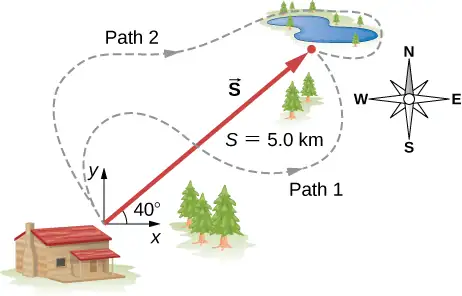
Answer
3.8 km east, 3.2 km north, 7.0 km
34. A surveyor measures the distance across a river that flows straight north by the following method. Starting directly across from a tree on the opposite bank, the surveyor walks 100 m along the river to establish a baseline. She then sights across to the tree and reads that the angle from the baseline to the tree is \(35{}^{\circ}\). How wide is the river?
35. A pedestrian walks 6.0 km east and then 13.0 km north. Use a graphical method to find the pedestrian’s resultant displacement and geographic direction.
Answer
14.3 km, \(65{}^{\circ}\)
36. The magnitudes of two displacement vectors are A = 20 m and B = 6 m. What are the largest and the smallest values of the magnitude of the resultant \(\mathbf{\vec{R}}=\mathbf{\vec{A}}+\mathbf{\vec{B}}?\)
2.2 Coordinate Systems and Components of a Vector¶
37. Assuming the +x-axis is horizontal and points to the right, resolve the vectors given in the following figure to their scalar components and express them in vector component form.
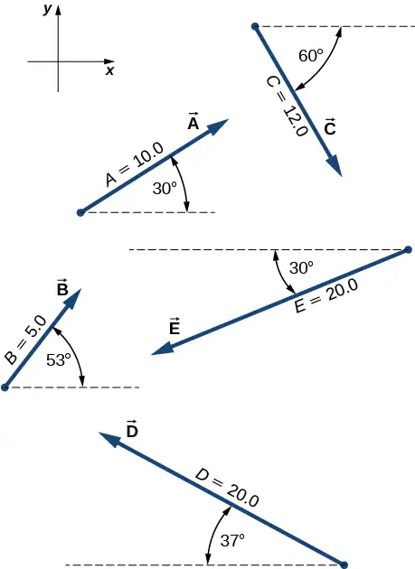
Answer
a. \(\mathbf{\vec{A}}=+8.66\mathbf{\hat{i}}+5.00\mathbf{\hat{j}}\), b. \(\mathbf{\vec{B}}=+3.01\mathbf{\hat{i}}+3.99\mathbf{\hat{j}}\), c. \(\mathbf{\vec{C}}=+6.00\mathbf{\hat{i}}-10.39\mathbf{\hat{j}}\), d. \(\mathbf{\vec{D}}=-15.97\mathbf{\hat{i}}+12.04\mathbf{\hat{j}}\), f. \(\mathbf{\vec{F}}=-17.32\mathbf{\hat{i}}-10.00\mathbf{\hat{j}}\)
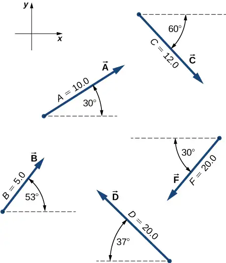
38. Suppose you walk 18.0 m straight west and then 25.0 m straight north. How far are you from your starting point? What is your displacement vector? What is the direction of your displacement? Assume the +x-axis is to the east.
39. You drive 7.50 km in a straight line in a direction \(15{}^{\circ}\) east of north. (a) Find the distances you would have to drive straight east and then straight north to arrive at the same point. (b) Show that you still arrive at the same point if the east and north legs are reversed in order. Assume the +x-axis is to the east.
Answer
a. 1.94 km, 7.24 km; b. proof
40. A sledge is being pulled by two horses on a flat terrain. The net force on the sledge can be expressed in the Cartesian coordinate system as vector \(\mathbf{\vec{F}}=(-2980.0\mathbf{\hat{i}}+8200.0\mathbf{\hat{j}})\text{N}\), where \(\mathbf{\hat{i}}\) and \(\mathbf{\hat{j}}\) denote directions to the east and north, respectively. Find the magnitude and direction of the pull.
41. A trapper walks a 5.0-km straight-line distance from her cabin to the lake, as shown in the following figure. Determine the east and north components of her displacement vector. How many more kilometers would she have to walk if she walked along the component displacements? What is her displacement vector?
Answer
3.8 km east, 3.2 km north, 2.0 km, \(\mathbf{\vec{D}}=(3.8\mathbf{\hat{i}}+3.2\mathbf{\hat{j}})\text{km}\)
42. The polar coordinates of a point are \(4\pi\text{/}3\) and 5.50 m. What are its Cartesian coordinates?
43. Two points in a plane have polar coordinates \(P_{1}(2.500\:\text{m},\pi\text{/}6)\) and \(P_{2}(3.800\:\text{m},2\pi\text{/}3)\). Determine their Cartesian coordinates and the distance between them in the Cartesian coordinate system. Round the distance to a nearest centimeter.
Answer
\(P_{1}(2.165\:\text{m},1.250\:\text{m})\), \(P_{2}(-1.900\:\text{m},3.290\:\text{m})\), 4.55 m
44. A chameleon is resting quietly on a lanai screen, waiting for an insect to come by. Assume the origin of a Cartesian coordinate system at the lower left-hand corner of the screen and the horizontal direction to the right as the +x-direction. If its coordinates are (2.000 m, 1.000 m), (a) how far is it from the corner of the screen? (b) What is its location in polar coordinates?
45. Two points in the Cartesian plane are A(2.00 m, −4.00 m) and B(−3.00 m, 3.00 m). Find the distance between them and their polar coordinates.
Answer
8.60 m, \(A(2\sqrt{5}\:\text{m},1.647\pi)\), \(B(3\sqrt{2}\:\text{m},0.75\pi)\)
46. A fly enters through an open window and zooms around the room. In a Cartesian coordinate system with three axes along three edges of the room, the fly changes its position from point b(4.0 m, 1.5 m, 2.5 m) to point e(1.0 m, 4.5 m, 0.5 m). Find the scalar components of the fly’s displacement vector and express its displacement vector in vector component form. What is its magnitude?
2.3 Algebra of Vectors¶
47. For vectors \(\mathbf{\vec{B}}=-\mathbf{\hat{i}}-4\mathbf{\hat{j}}\) and \(\mathbf{\vec{A}}=-3\mathbf{\hat{i}}-2\mathbf{\hat{j}}\), calculate (a) \(\mathbf{\vec{A}}+\mathbf{\vec{B}}\) and its magnitude and direction angle, and (b) \(\mathbf{\vec{A}}-\mathbf{\vec{B}}\) and its magnitude and direction angle.
Answer
a. \(\mathbf{\vec{A}}+\mathbf{\vec{B}}=-4\mathbf{\hat{i}}-6\mathbf{\hat{j}}\), \(|\mathbf{\vec{A}}+\mathbf{\vec{B}}|=7.211,\theta=236{}^{\circ}\); b. \(\mathbf{\vec{A}}-\mathbf{\vec{B}}=-2\mathbf{\hat{i}}+2\mathbf{\hat{j}}\), \(|\mathbf{\vec{A}}-\mathbf{\vec{B}}|=2\sqrt{2},\theta=135{}^{\circ}\)
48. A particle undergoes three consecutive displacements given by vectors \({\mathbf{\vec{D}}}_{1}=(3.0\mathbf{\hat{i}}-4.0\mathbf{\hat{j}}-2.0\mathbf{\hat{k}})\text{mm}\), \({\mathbf{\vec{D}}}_{2}=(1.0\mathbf{\hat{i}}-7.0\mathbf{\hat{j}}+4.0\mathbf{\hat{k}})\text{mm}\), and \({\mathbf{\vec{D}}}_{3}=(-7.0\mathbf{\hat{i}}+4.0\mathbf{\hat{j}}+1.0\mathbf{\hat{k}})\text{mm}\). (a) Find the resultant displacement vector of the particle. (b) What is the magnitude of the resultant displacement? (c) If all displacements were along one line, how far would the particle travel?
49. Given two displacement vectors \(\mathbf{\vec{A}}=(3.00\mathbf{\hat{i}}-4.00\mathbf{\hat{j}}+4.00\mathbf{\hat{k}})\text{m}\) and \(\mathbf{\vec{B}}=(2.00\mathbf{\hat{i}}+3.00\mathbf{\hat{j}}-7.00\mathbf{\hat{k}})\text{m}\), find the displacements and their magnitudes for (a) \(\mathbf{\vec{C}}=\mathbf{\vec{A}}+\mathbf{\vec{B}}\) and (b) \(\mathbf{\vec{D}}=2\mathbf{\vec{A}}-\mathbf{\vec{B}}\).
Answer
a. \(\mathbf{\vec{C}}=(5.0\mathbf{\hat{i}}-1.0\mathbf{\hat{j}}-3.0\mathbf{\hat{k}})\text{m},C=5.92\:\text{m}\);
b. \(\mathbf{\vec{D}}=(4.0\mathbf{\hat{i}}-11.0\mathbf{\hat{j}}+15.0\mathbf{\hat{k}})\text{m},D=19.03\:\text{m}\)
50. A small plane flies \(40.0\:\text{km}\) in a direction \(60{}^{\circ}\) north of east and then flies \(30.0\:\text{km}\) in a direction \(15{}^{\circ}\) north of east. Use the analytical method to find the total distance the plane covers from the starting point, and the geographic direction of its displacement vector. What is its displacement vector?
51. In an attempt to escape a desert island, a castaway builds a raft and sets out to sea. The wind shifts a great deal during the day, and she is blown along the following straight lines: 2.50 km and \(45.0{}^{\circ}\) north of west, then 4.70 km and \(60.0{}^{\circ}\) south of east, then 1.30 km and \(25.0{}^{\circ}\) south of west, then 5.10 km due east, then 1.70 km and \(5.00{}^{\circ}\) east of north, then 7.20 km and \(55.0{}^{\circ}\) south of west, and finally 2.80 km and \(10.0{}^{\circ}\) north of east. Use the analytical method to find the resultant vector of all her displacement vectors. What is its magnitude and direction?
Answer
\(\mathbf{\vec{D}}=(3.3\mathbf{\hat{i}}-6.6\mathbf{\hat{j}})\text{km}\), \(\mathbf{\hat{i}}\) is to the east, 7.34 km, \(-63.5{}^{\circ}\)
52. Assuming the +x-axis is horizontal to the right for the vectors given in the following figure, use the analytical method to find the following resultants: (a) \(11.67\mathbf{\hat{i}}+8.99\mathbf{\hat{j}}\), (b) \(9.01\mathbf{\hat{i}}\:-6.40\mathbf{\hat{j}}\), (c) \(\mathbf{\vec{D}}+\mathbf{\vec{F}}\), (d) \(5.65\mathbf{\hat{i}}+1.01\mathbf{\hat{j}}\), (e) \(\mathbf{\vec{D}}-\mathbf{\vec{F}}\), (f) \(\mathbf{\vec{A}}+2\mathbf{\vec{F}}\), (g) \(\mathbf{\vec{C}}-2\mathbf{\vec{D}}+3\mathbf{\vec{F}}\), and (h) \(\mathbf{\vec{A}}-4\mathbf{\vec{D}}+2\mathbf{\vec{F}}\).
![The x y coordinate system has positive x to the right and positive y up. Vector A has magnitude 10.0 and points 30 degrees counterclockwise from the positive x direction. Vector B has magnitude 5.0 and points 53 degrees counterclockwise from the positive x direction. Vector C has magnitude 12.0 and points 60 degrees clockwise from the positive x direction. Vector D has magnitude 20.0 and points 37 degrees clockwise from the negative x direction. Vector F has magnitude 20.0 and points 30 degrees counterclockwise from the negative x direction.](img/cnx-uphysics-02-01-problems-img.webp)
53. Given the vectors in the preceding figure, find vector \(\mathbf{\vec{R}}\) that solves equations (a) \(\mathbf{\vec{D}}+\mathbf{\vec{R}}=\mathbf{\vec{F}}\) and (b) \(\mathbf{\vec{C}}-2\mathbf{\vec{D}}+5\mathbf{\vec{R}}=3\mathbf{\vec{F}}\). Assume the +x-axis is horizontal to the right.
Answer
a. \(\mathbf{\vec{R}}=-1.35\mathbf{\hat{i}}-22.04\mathbf{\hat{j}}\), b. \(\mathbf{\vec{R}}=-17.98\mathbf{\hat{i}}+0.89\mathbf{\hat{j}}\)
54. A delivery driver starts at the post office, drives 40 km north, then 20 km west, then 60 km northeast, and finally 50 km north to stop for lunch. Use the analytical method to determine the following: (a) Find his net displacement vector. (b) How far is the restaurant from the post office? (c) If he returns directly from the restaurant to the post office, what is his displacement vector on the return trip? (d) What is his compass heading on the return trip? Assume the +x-axis is to the east.
55. An adventurous dog strays from home, runs three blocks east, two blocks north, and one block east, one block north, and two blocks west. Assuming that each block is about a 100 yd, use the analytical method to find the dog’s net displacement vector, its magnitude, and its direction. Assume the +x-axis is to the east. How would your answer be affected if each block was about 100 m?
Answer
\(\mathbf{\vec{D}}=(200\mathbf{\hat{i}}+300\mathbf{\hat{j}})\text{yd}\), D = 360.5 yd, \(56.3{}^{\circ}\) north of east; The numerical answers would stay the same but the physical unit would be meters. The physical meaning and distances would be about the same because 1 yd is comparable with 1 m.
56. If \(\mathbf{\vec{D}}=(6.00\mathbf{\hat{i}}-8.00\mathbf{\hat{j}})\text{m}\), \(\mathbf{\vec{B}}=(-8.00\mathbf{\hat{i}}+3.00\mathbf{\hat{j}})\text{m}\), and \(\mathbf{\vec{A}}=(26.0\mathbf{\hat{i}}+19.0\mathbf{\hat{j}})\text{m}\), find the unknown constants a and b such that \(a\mathbf{\vec{D}}+b\mathbf{\vec{B}}+\mathbf{\vec{A}}=\mathbf{\overrightarrow{0}}\).
57. Given the displacement vector \(\mathbf{\vec{D}}=(3\mathbf{\hat{i}}-4\mathbf{\hat{j}})\text{m,}\) find the displacement vector \(\mathbf{\vec{R}}\) so that \(\mathbf{\vec{D}}+\mathbf{\vec{R}}=-4D\mathbf{\hat{j}}\).
Answer
\(\mathbf{\vec{R}}=(-3\mathbf{\hat{i}}-16\mathbf{\hat{j}})\text{m}\)
58. Find the unit vector of direction for the following vector quantities: (a) Force \(\mathbf{\vec{F}}=(3.0\mathbf{\hat{i}}-2.0\mathbf{\hat{j}})\text{N}\), (b) displacement \(\mathbf{\vec{D}}=(-3.0\mathbf{\hat{i}}-4.0\mathbf{\hat{j}})\text{m}\), and (c) velocity \(\mathbf{\vec{v}}=(-5.00\mathbf{\hat{i}}+4.00\mathbf{\hat{j}})\text{m/s}\).
59. At one point in space, the direction of the electric field vector is given in the Cartesian system by the unit vector \(\mathbf{\hat{E}}=1\:\text{/}\sqrt{5}\mathbf{\hat{i}}-2\:\text{/}\sqrt{5}\mathbf{\hat{j}}\). If the magnitude of the electric field vector is E = 400.0 V/m, what are the scalar components \(E_{x}\), \(E_{y}\), and \(E_{z}\) of the electric field vector \(\vec{E}\) at this point? What is the direction angle \(\theta_{E}\) of the electric field vector at this point?
Answer
\(\mathbf{\vec{E}}=E\mathbf{\hat{E}}\), \(E_{x}=+178.9\text{V}\text{/}\text{m}\), \(E_{y}=-357.8\text{V}\text{/}\text{m}\), \(E_{z}=0.0\text{V}\text{/}\text{m}\), \(\theta_{E}=-\tan^{-1}(2)\)
60. A barge is pulled by the two tugboats shown in the following figure. One tugboat pulls on the barge with a force of magnitude 4000 units of force at \(15{}^{\circ}\) above the line AB (see the figure) and the other tugboat pulls on the barge with a force of magnitude 5000 units of force at \(12{}^{\circ}\) below the line AB. Resolve the pulling forces to their scalar components and find the components of the resultant force pulling on the barge. What is the magnitude of the resultant pull? What is its direction relative to the line AB?
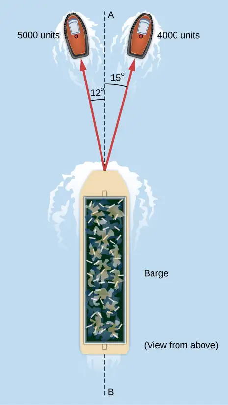
61. In the control tower at a regional airport, an air traffic controller monitors two aircraft that travel in straight paths directly away from the control tower. One plane is a cargo carrier Boeing 747 climbing at \(10{}^{\circ}\) above the horizontal, and moving \(30{}^{\circ}\) north of west. At some moment in time, the controller notes that the Boeing is at an altitude of 2500 m and the DC-3 is at an altitude of 3000 m. The other plane is a Douglas DC-3 climbing at \(5{}^{\circ}\) above the horizontal, and cruising directly west. (a) Find the position vectors of the planes relative to the control tower at this time. (b) What is the distance between the planes at this time?
Answer
a. \({\mathbf{\vec{R}}}_{B}=(12.278\mathbf{\hat{i}}+7.089\mathbf{\hat{j}}+2.500\mathbf{\hat{k}})\text{km}\), \({\mathbf{\vec{R}}}_{D}=(-34.290\mathbf{\hat{i}}+3.000\mathbf{\hat{k}})\text{km}\); b. \(|{\mathbf{\vec{R}}}_{B}-{\mathbf{\vec{R}}}_{D}|=23.131\:\text{km}\)
2.4 Products of Vectors¶
62. Assuming the +x-axis is horizontal to the right for the vectors in the following figure, find the following scalar products: (a) \(\mathbf{\vec{A}}\cdot\mathbf{\vec{C}}\), (b) \(\mathbf{\vec{A}}\cdot\mathbf{\vec{F}}\), (c) \(\mathbf{\vec{D}}\cdot\mathbf{\vec{C}}\), (d) \(\mathbf{\vec{A}}\cdot(\mathbf{\vec{F}}+2\mathbf{\vec{C}})\), (e) \(\mathbf{\hat{i}}\cdot\mathbf{\vec{B}}\), (f) \(\mathbf{\hat{j}}\cdot\mathbf{\vec{B}}\), (g) \((3\mathbf{\hat{i}}-\mathbf{\hat{j}})\cdot\mathbf{\vec{B}}\), and (h) \(\hat{B}\cdot\vec{B}\).
63. Assuming the +x-axis is horizontal to the right for the vectors in the preceding figure, find (a) the component of vector \(\mathbf{\vec{A}}\) along vector \(\mathbf{\vec{C}}\), (b) the component of vector \(\mathbf{\vec{C}}\) along vector \(\mathbf{\vec{A}}\), (c) the component of vector \(\mathbf{\hat{i}}\) along vector \(\mathbf{\vec{F}}\), and (d) the component of vector \(\mathbf{\vec{F}}\) along vector \(\mathbf{\hat{i}}\).
Answer
a. 0, b. 0, c. –0.866, d. –17.32
64. Find the angle between vectors for (a) \(\mathbf{\vec{D}}=(-3.0\mathbf{\hat{i}}-4.0\mathbf{\hat{j}})\text{m}\) and \(\mathbf{\vec{A}}=(-3.0\mathbf{\hat{i}}+4.0\mathbf{\hat{j}})\text{m}\) and (b) \(\mathbf{\vec{D}}=(2.0\mathbf{\hat{i}}-4.0\mathbf{\hat{j}}+\mathbf{\hat{k}})\text{m}\) and \(\mathbf{\vec{B}}=(-2.0\mathbf{\hat{i}}+3.0\mathbf{\hat{j}}+2.0\mathbf{\hat{k}})\text{m}\).
65. Find the angles that vector \(\mathbf{\vec{D}}=(2.0\mathbf{\hat{i}}-4.0\mathbf{\hat{j}}+\mathbf{\hat{k}})\text{m}\) makes with the x-, y-, and z- axes.
Answer
\(\theta_{i}=64.12{}^{\circ},\theta_{j}=150.79{}^{\circ},\theta_{k}=77.39{}^{\circ}\)
66. Show that the force vector \(\mathbf{\vec{D}}=(2.0\mathbf{\hat{i}}-4.0\mathbf{\hat{j}}+\mathbf{\hat{k}})\text{N}\) is orthogonal to the force vector \(\mathbf{\vec{G}}=(3.0\mathbf{\hat{i}}+4.0\mathbf{\hat{j}}+10.0\mathbf{\hat{k}})\text{N}\).
67. Assuming the +x-axis is horizontal to the right for the vectors in the previous figure, find the following vector products: (a) \(\mathbf{\vec{A}}\:\times\:\mathbf{\vec{C}}\), (b) \(\mathbf{\vec{A}}\:\times\:\mathbf{\vec{F}}\), (c) \(\mathbf{\vec{D}}\:\times\:\mathbf{\vec{C}}\), (d) \(\mathbf{\vec{A}}\:\times\:(\mathbf{\vec{F}}+2\mathbf{\vec{C}})\), (e) \(\mathbf{\hat{i}}\:\times\:\mathbf{\vec{B}}\), (f) \(\mathbf{\hat{j}}\:\times\:\mathbf{\vec{B}}\), (g) \((3\mathbf{\hat{i}}-\mathbf{\hat{j}})\:\times\:\mathbf{\vec{B}}\), and (h) \(\mathbf{\hat{B}}\:\times\:\mathbf{\vec{B}}\).
Answer
a. \(-120\mathbf{\hat{k}}\), b. \(0\mathbf{\hat{k}}\), c. \(94\mathbf{\hat{k}}\), d. \(-240\mathbf{\hat{k}}\), e. \(4.0\mathbf{\hat{k}}\), f. \(-3.0\mathbf{\hat{k}}\), g. \(15\mathbf{\hat{k}}\), h. 0
68. Find the cross product \(\mathbf{\vec{A}}\:\times\:\mathbf{\vec{C}}\) for (a) \(\mathbf{\vec{A}}=2.0\mathbf{\hat{i}}-4.0\mathbf{\hat{j}}+\mathbf{\hat{k}}\) and \(\mathbf{\vec{C}}=3.0\mathbf{\hat{i}}+4.0\mathbf{\hat{j}}+10.0\mathbf{\hat{k}}\), (b) \(\mathbf{\vec{A}}=3.0\mathbf{\hat{i}}+4.0\mathbf{\hat{j}}+10.0\mathbf{\hat{k}}\) and \(\mathbf{\vec{C}}=2.0\mathbf{\hat{i}}-4.0\mathbf{\hat{j}}+\mathbf{\hat{k}}\), (c) \(\mathbf{\vec{A}}=-3.0\mathbf{\hat{i}}-4.0\mathbf{\hat{j}}\) and \(\mathbf{\vec{C}}=-3.0\mathbf{\hat{i}}+4.0\mathbf{\hat{j}}\), and (d) \(\mathbf{\vec{C}}=-2.0\mathbf{\hat{i}}+3.0\mathbf{\hat{j}}+2.0\mathbf{\hat{k}}\) and \(\mathbf{\vec{A}}=-9.0\mathbf{\hat{j}}\).
69. For the vectors in the earlier figure, find (a) \((\mathbf{\vec{A}}\:\times\:\mathbf{\vec{F}})\cdot\mathbf{\vec{D}}\), (b) \((\mathbf{\vec{A}}\:\times\:\mathbf{\vec{F}})\cdot(\mathbf{\vec{D}}\:\times\:\mathbf{\vec{B}})\), and (c) \((\mathbf{\vec{A}}\cdot\mathbf{\vec{F}})(\mathbf{\vec{D}}\:\times\:\mathbf{\vec{B}})\).
Answer
a. 0, b. 0, c. \(20,000\mathbf{\hat{k}}\)
70. (a) If \(\mathbf{\vec{A}}\:\times\:\mathbf{\vec{F}}=\mathbf{\vec{B}}\:\times\:\mathbf{\vec{F}}\), can we conclude \(\mathbf{\vec{A}}=\mathbf{\vec{B}}\)? (b) If \(\mathbf{\vec{A}}\cdot\mathbf{\vec{F}}=\mathbf{\vec{B}}\cdot\mathbf{\vec{F}}\), can we conclude \(\mathbf{\vec{A}}=\mathbf{\vec{B}}\)? (c) If \(F\mathbf{\vec{A}}=\mathbf{\vec{B}}F\), can we conclude \(\mathbf{\vec{A}}=\mathbf{\vec{B}}\)? Why or why not?
Additional Problems¶
71. You fly \(32.0\:\text{km}\) in a straight line in still air in the direction \(35.0{}^{\circ}\) south of west. (a) Find the distances you would have to fly due south and then due west to arrive at the same point. (b) Find the distances you would have to fly first in a direction \(45.0{}^{\circ}\) south of west and then in a direction \(45.0{}^{\circ}\) west of north. Note these are the components of the displacement along a different set of axes—namely, the one rotated by \(45{}^{\circ}\) with respect to the axes in (a).
Answer
a. 18.4 km and 26.2 km, b. 31.5 km and 5.56 km
72. Rectangular coordinates of a point are given by (2, y) and its polar coordinates are given by \((r,\pi\text{/}6)\). Find y and r.
73. If the polar coordinates of a point are \((r,\phi)\) and its rectangular coordinates are \((x,y)\), determine the polar coordinates of the following points: (a) (−x, y), (b) (−2x, −2y), and (c) (3x, −3y).
Answer
a. \((r,\pi-\phi)\), b. \((2r{,}\:\pi\:+\:\phi)\), c. \((3r,-\phi)\)
74. Vectors \(\mathbf{\vec{A}}\) and \(\mathbf{\vec{B}}\) have identical magnitudes of 5.0 units. Find the angle between them if \(\mathbf{\vec{A}}+\mathbf{\vec{B}}=5\sqrt{2}\mathbf{\hat{j}}\).
75. Starting at the island of Moi in an unknown archipelago, a fishing boat makes a round trip with two stops at the islands of Noi and Poi. It sails from Moi for 4.76 nautical miles (nmi) in a direction \(37{}^{\circ}\) north of east to Noi. From Noi, it sails \(69{}^{\circ}\) west of north to Poi. On its return leg from Poi, it sails \(28{}^{\circ}\) east of south. What distance does the boat sail between Noi and Poi? What distance does it sail between Moi and Poi? Express your answer both in nautical miles and in kilometers. Note: 1 nmi = 1852 m.
Answer
\(d_{\text{PM}}=6.2\:\text{nmi}=11.4\:\text{km},\;d_{\text{NP}}=7.2\:\text{nmi}=13.3\:\text{km}\)
76. An air traffic controller notices two signals from two planes on the radar monitor. One plane is at altitude 800 m and in a 19.2-km horizontal distance to the tower in a direction \(25{}^{\circ}\) south of west. The second plane is at altitude 1100 m and its horizontal distance is 17.6 km and \(20{}^{\circ}\) south of west. What is the distance between these planes?
77. Show that when \(\mathbf{\vec{A}}+\mathbf{\vec{B}}=\mathbf{\vec{C}}\), then \(C^{2}=A^{2}+B^{2}+2AB\:\cos\:\phi\), where \(\phi\) is the angle between vectors \(\mathbf{\vec{A}}\) and \(\mathbf{\vec{B}}\).
Answer
proof
78. Four force vectors each have the same magnitude f. What is the largest magnitude the resultant force vector may have when these forces are added? What is the smallest magnitude of the resultant? Make a graph of both situations.
79. A skater glides along a circular path of radius 5.00 m in clockwise direction. When he coasts around one-half of the circle, starting from the west point, find (a) the magnitude of his displacement vector and (b) how far he actually skated. (c) What is the magnitude of his displacement vector when he skates all the way around the circle and comes back to the west point?
Answer
a. 10.00 m, b. \(5\pi\:\text{m}\), c. 0
80. A stubborn dog is being walked on a leash by its owner. At one point, the dog encounters an interesting scent at some spot on the ground and wants to explore it in detail, but the owner gets impatient and pulls on the leash with force \(\mathbf{\vec{F}}=(98.0\mathbf{\hat{i}}+132.0\mathbf{\hat{j}}+32.0\mathbf{\hat{k}})\text{N}\) along the leash. (a) What is the magnitude of the pulling force? (b) What angle does the leash make with the vertical?
81. If the velocity vector of a polar bear is \(\mathbf{\vec{u}}=(-18.0\mathbf{\hat{i}}-13.0\mathbf{\hat{j}})\text{km}\text{/}\text{h}\), how fast and in what geographic direction is it heading? Here, \(\mathbf{\hat{i}}\) and \(\mathbf{\hat{j}}\) are directions to geographic east and north, respectively.
Answer
22.2 km/h, \(35.8{}^{\circ}\) south of west
82. Find the scalar components of three-dimensional vectors \(\mathbf{\vec{G}}\) and \(\mathbf{\vec{H}}\) in the following figure and write the vectors in vector component form in terms of the unit vectors of the axes.
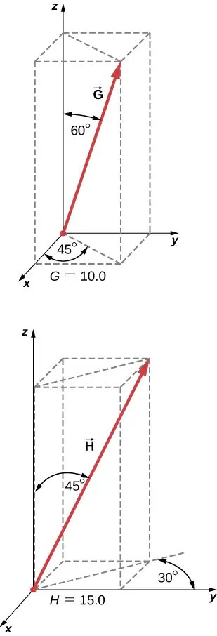
83. A diver explores a shallow reef off the coast of Belize. She initially swims 90.0 m north, makes a turn to the east and continues for 200.0 m, then follows a big grouper for 80.0 m in the direction \(30{}^{\circ}\) north of east. In the meantime, a local current displaces her by 150.0 m south. Assuming the current is no longer present, in what direction and how far should she now swim to come back to the point where she started?
Answer
270 m, \(4.2{}^{\circ}\) north of west
84. A force vector \(\mathbf{\vec{A}}\) has x- and y-components, respectively, of −8.80 units of force and 15.00 units of force. The x- and y-components of force vector \(\mathbf{\vec{B}}\) are, respectively, 13.20 units of force and −6.60 units of force. Find the components of force vector \(\mathbf{\vec{C}}\) that satisfies the vector equation \(\mathbf{\vec{A}}-\mathbf{\vec{B}}+3\mathbf{\vec{C}}=0\).
85. Vectors \(\mathbf{\vec{A}}\) and \(\mathbf{\vec{B}}\) are two orthogonal vectors in the xy-plane and they have identical magnitudes. If \(\mathbf{\vec{A}}=3.0\mathbf{\hat{i}}+4.0\mathbf{\hat{j}}\), find \(\mathbf{\vec{B}}\).
Answer
\(\mathbf{\vec{B}}=-4.0\mathbf{\hat{i}}+3.0\mathbf{\hat{j}}\) or \(\mathbf{\vec{B}}=4.0\mathbf{\hat{i}}-3.0\mathbf{\hat{j}}\)
86. For the three-dimensional vectors in the following figure, find (a) \(\mathbf{\vec{G}}\:\times\:\mathbf{\vec{H}}\), (b) \(|\mathbf{\vec{G}}\:\times\:\mathbf{\vec{H}}|\), and (c) \(\mathbf{\vec{G}}\cdot\mathbf{\vec{H}}\).
87. Show that \((\mathbf{\vec{B}}\:\times\:\mathbf{\vec{C}})\cdot\mathbf{\vec{A}}\) is the volume of the parallelepiped, with edges formed by the three vectors in the following figure.
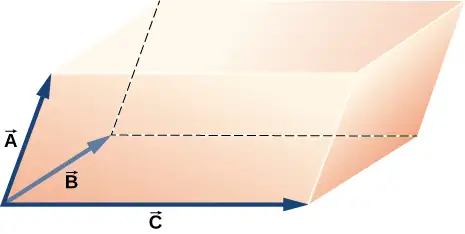
Answer
proof
Challenge Problems¶
88. Vector \(\mathbf{\vec{B}}\) is 5.0 cm long and vector \(\mathbf{\vec{A}}\) is 4.0 cm long. Find the angle between these two vectors when \(|\mathbf{\vec{A}}+\mathbf{\vec{B}}|=\:3.0\:\text{cm}\).
89. What is the component of the force vector \(\mathbf{\vec{G}}=(3.0\mathbf{\hat{i}}+4.0\mathbf{\hat{j}}+10.0\mathbf{\hat{k}})\text{N}\) along the force vector \(\mathbf{\vec{H}}=(1.0\mathbf{\hat{i}}+4.0\mathbf{\hat{j}})\text{N}\)?
Answer
\(G_{H}=19N/\sqrt{17}\approx 4.6N\)
90. The following figure shows a triangle formed by the three vectors \(\mathbf{\vec{A}}\), \(\mathbf{\vec{B}}\), and \(\mathbf{\vec{C}}\). If vector \({\mathbf{\vec{C}}}'\) is drawn between the midpoints of vectors \(\mathbf{\vec{A}}\) and \(\mathbf{\vec{B}}\), show that \({\mathbf{\vec{C}}}'=\mathbf{\vec{C}}\text{/}2\).
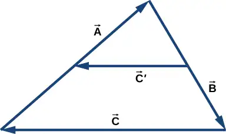
91. Distances between points in a plane do not change when a coordinate system is rotated. In other words, the magnitude of a vector is invariant under rotations of the coordinate system. Suppose a coordinate system S is rotated about its origin by angle \(\phi\) to become a new coordinate system \(\text{S}'\), as shown in the following figure. A point in a plane has coordinates (x, y) in S and coordinates \((x',y')\) in \(\text{S}'\).
(a) Show that, during the transformation of rotation, the coordinates in \(\text{S}'\) are expressed in terms of the coordinates in S by the following relations:
(b) Show that the distance of point P to the origin is invariant under rotations of the coordinate system. Here, you have to show that
(c) Show that the distance between points P and Q is invariant under rotations of the coordinate system. Here, you have to show that
![Two coordinate systems are shown. The x y coordinate system S, in red, has positive x to to the right and positive y up. The x prime y prime coordinate system S prime, in blue, shares the same origin as S but is rotated relative to S counterclockwise an angle phi. Two points, P and Q are shown. Point P’s x coordinate in frame S is shown as a dashed line from P to the x axis, drawn parallel to the y axis. Point P’s y coordinate in frame S is shown as a dashed line from P to the y axis, drawn parallel to the x axis. Point P’s x prime coordinate in frame S prime is shown as a dashed line from P to the x prime axis, drawn parallel to the y prime axis. Point P’s y prime coordinate in frame S prime is shown as a dashed line from P to the y prime axis, drawn parallel to the x prime axis.](img/cnx-uphysics-02-04-challenge-img.webp)
Answer
proof
Adapted from University Physics Volume 1 by OpenStax, licensed under CC BY 4.0. Access the original for free at openstax.org. Changes: converted to the web reading format of The Open Book Project.